1
可以形成八个不同大小的正方形，如图所示：
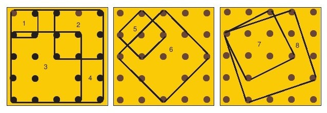
2
并没有任何问题呀。如果朱莉娅是你的相亲对象，你还有什么问题？
3～4
在你完成了两次测验之后会发现，显然，这两个看似随机的数字模式存在一些有意义的差异，因为在第二次测验里，你的表现明显要更好一些。这是为什么呢？
在这些测验之后，你会充满好奇想要一探究竟。在第二次的测验里肯定出现了某些状况，从而让这次数数变得更加容易。显然，你在玩这个游戏的时候，并没有察觉到这一点。但你的潜意识却已经察觉到了。你的潜意识发现了其中的秘密，从而帮助你更高效地完成了第二次测验，而你的意识却依然对此一无所知。潜意识发现了一些你的意识没有察觉到的模式。只有在完成了这些测验之后，你才会明白这一点。
第二个网格里的数字的排列方式，会让你的眼睛适应一种重复的模式。第二次测验里的数字板可以按各边的中点分割为四个象限。因此，数字1位于右上方的象限，数字2位于左下方的象限，数字3位于左上方的象限，而数字4则位于右下方的象限。而从数字5开始又会按照相同的模式进行重复，直到数字90。这一过程会缩小找寻下一个数字的范围，让搜索变得更高效。
你的潜意识发现了其中的秘密，很好地运用了它。但是，你的意识可能并没有察觉到这一点。这非常生动地展现了潜意识所具有的能量与创造力。在你的意识一无所知的时候，你的潜意识已经解决了问题。这个例子清晰地展示了大脑通常是怎么解决问题的。
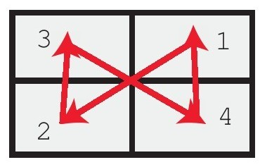
5
在第16天行将结束的时候，这只蜗牛已经到达80厘米的高度了，在第17天行将结束的时候，这只蜗牛在窗户上所处的高度将会到达90厘米。
6
1+2+3-4+5+6+78+9=100
12+3-4+5+67+8+9=100
123+4-5+67-89=100
这个问题有许多衍生版本，其中不少都允许使用加减法之外的其他计算。
7
如图所示：
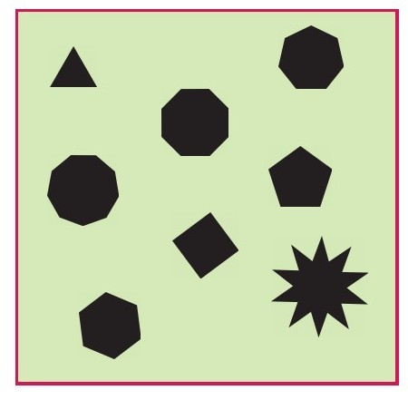
8
当无数只小鸟沿着电线随机分布时，50%的小鸟将会被相邻的小鸟看到，25%的小鸟将会被它们相邻的两只小鸟看到。剩下25%的小鸟不会被看到。
这样的情况与两次投掷一个硬币是相似的：一次正面朝上的概率是50%，两次都正面朝上的概率是25%，而两次出现反面朝上的概率同样是25%。
9
A—2，B—3，C—2.
10
下图清楚地表明，铅笔的转动可以如图所示依次描述三角形的三个角。当铅笔最终停留在一开始出发的地方，却指着相反的方向，这正好说明三个角的度数加起来等于一个平角的度数。
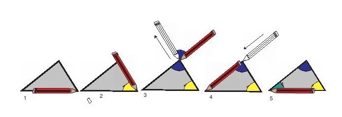
11
可以到达这栋建筑的每一层。
维修人员需要走30趟才能到遍这栋建筑的每一层。按“升”键18次，按“降”键12次即可。具体的操作方法如图所示：
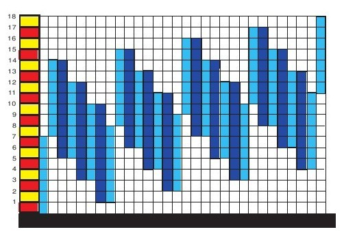
12
这样的圆才是最好的围墙。如图所示：
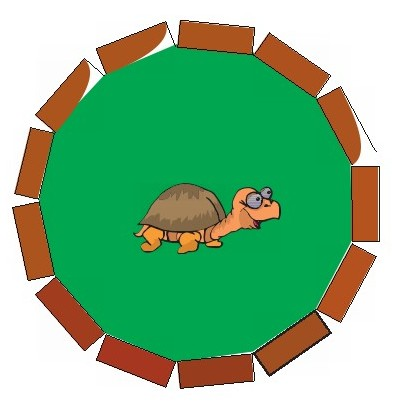
13
如图所示，最高点已经展现出来了。这是唯一一根倾斜且不与地面平行的支架。
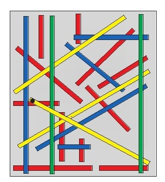
14
如图所示：
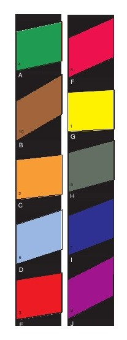
15
逻辑就是向前直走一个单位，然后向右转两个单位长度，接着向右转三个单位长度，依此类推，直到第九个单位长度。此时又重新开始，直到规则发生变化。
16
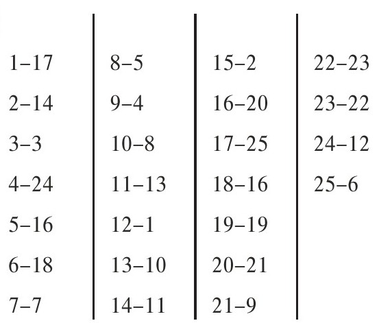
17
（8+π）米：如图所示：
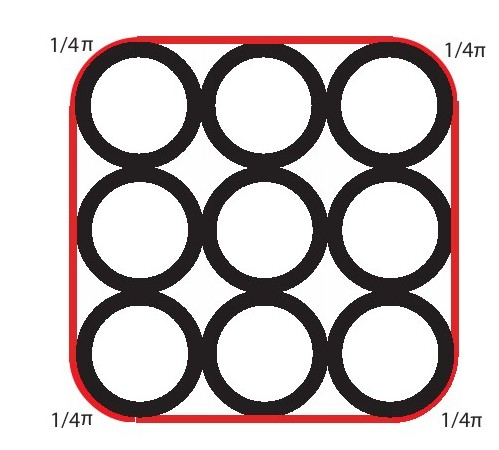
18
蛋糕的价格：1.75美元
冰激凌的价格：0.75美元
19
她的想法是错误的。1200是960的125%，她赚了240美元的利润。而1200则是1500的80%——也就是说她损失了300美元。这两次销售加起来的话，她还损失了60美元。
20
不让女人挨着坐一共有八种方法：
女男男女，女男女男，男女男女，女男男男，男女男男，男男女男，男男男女，男男男男。
当n是1，2，3，4，5，……时，答案分别是2，3，5，8，13，……，依此类推。实际上会构成斐波那契数列，这是相当有趣的。
21
在一个等边三角形里，三个内切的全等正方形可以将这个三角形剖分为28部分。如图所示：
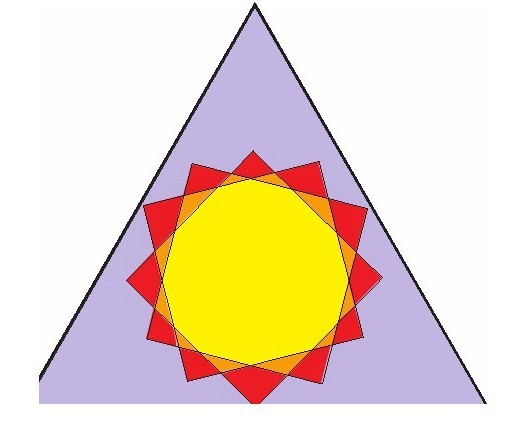
22
交点数量最少的四种解答方法，如图所示：
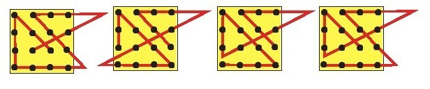
两个对称性的解答方法，如图所示：
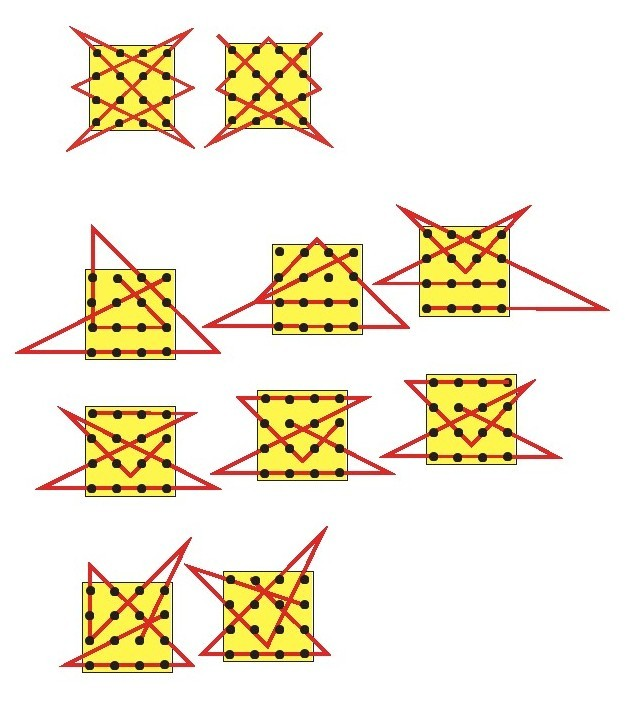
在总共14种解法（我们没有将旋转与镜像算作不同的情况）中，有两个对称式的与四种交点最少的。
23
一开始，两个完全三角形被创造出来了，但在最后的点上，第三个完全三角形的出现似乎是不可避免的，无论你选择什么样的颜色。无论以怎样的方式对三角形进行着色，这样的情况似乎总会发生。这就是斯波纳的三角形引理得出来的结论：如果边界上有奇数条完全边的话，那么就会有奇数个完全三角形。如果边界上有偶数条完全边的话，那么就会有偶数个完全三角形。“a”与“b”之间的边是完全边。如图所示：
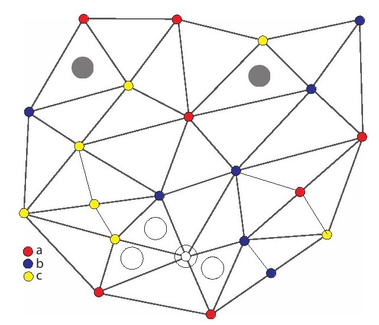
24
摇出其中任意一个数字的概率是1/6+1/6=2/6即1/3。
25
形状是不确定的。若是从楼顶的位置去观察的话，通常会是凸面的，但它也可以是凹面的。
26～28
谜题一：23个正方形。谜题二：47个正方形。谜题三：16个正方形。如图所示：
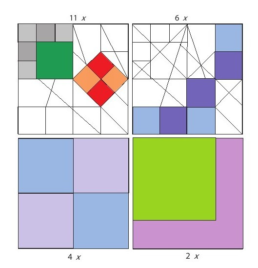
29
让人惊讶的是，重物始终都要比滚子移动得更远一些。如果滚子转动一圈，那么它走的距离就等于其直径乘以圆周率π，但是滚子上的重物则能够走两个这样的距离，如图所示。这是因为重物在相对滚子运动的同时，滚子也在相对地面前进。如果滚轴的周长是一米的话，那么滚子转动一圈之后，平板就会移动两米。这就是所谓的“滚子与平板定理”。
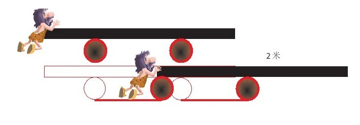
轮式车似乎是在公元前4000年中叶的美索不达米亚平原与欧洲中部同时出现的，因此轮式车究竟由哪一种文明首创，至今仍是一个未解之谜，学界对此还有诸多的争论。而最早关于轮式车的描绘（一辆马车，有四个轮子、两个轮轴），则是在波兰布洛诺西一个罐子上发现的，它是在波兰南部的文化遗址上挖掘出来的，据估算大约在公元前3500年到公元前3350年间。
30
如图所示：
迷宫通常是曲径的同义词，但当代的许多学者都认为这两者有着明显的区别：迷宫通常是指代一个复杂的分支游戏，有多种路线与方向的选择。而一个单向的曲径路线通常只会有一条无分支的路线，直接通向中心。从这个意义上来说，迷宫是一种有清晰路线通向中心位置，然后返回来的游戏，走起来并不难。
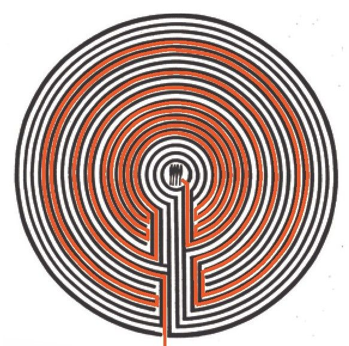
31
1.莱布尼茨的想法是错误的。
总数12只有在一种情形下才会出现（红色的骰子等于6，蓝色的骰子等于6）。而总数11则有两种情况（红色的骰子等于6，蓝色的骰子等于5，或者是蓝色的骰子等于5，红色的骰子等于6）。
因此，它们出现的概率是不同的，分别为1/36与2/36，你也可以从这个表格里清楚地看到。
2.当你摇一对骰子的时候，是不可能摇出总数1的。你只能摇出六个总数为偶数的数值：2，4，6，8，10，12，或五个总数为奇数的数值：3，5，7，9，11。你有18种方式摇出偶数总数，你也同样有18种方式摇出奇数总数，如表格所显示的那样。因此，摇出的总数为奇数与偶数的概率是一样的。
32
在一起投掷三颗骰子的时候，总数值从数字3到18之间，其中一共有6×6×6=216种不同的方法。你可以找到15种不同的方法掷出总数7（这占到了7%的比例），找到27种不同的方法掷出总数10（这占到了12.5%的比例）。
33
你们两个投掷出相同数字的概率是1/6。因此，你们中一个人投掷出的数字比另一个人投掷出的数字更大的概率则为5/6。因此，你们中某个人比另一个人投掷出更高数字的概率就要减半，也就是5/12。
34
你投掷一颗骰子六次可能都投掷不出一个数字6。显然，其中的概率并不是1或100%。事实上，你要计算的是连续投掷六次骰子不出现数字6的概率。我们可以看到，投掷一次骰子不出现数字6的概率为5/6，而连投掷六次都不出现数字6的概率则为5/6×5/6×5/6×5/6×5/6×5/6=0.33。因此，连投掷六次出现数字6的概率是相当高的，也就是1-0.33=0.67，即67%左右。
35
6/6×5/6×4/6×3/6×2/6×1/6=0. 015
36
逆时针转动两个半周期，如图所示：
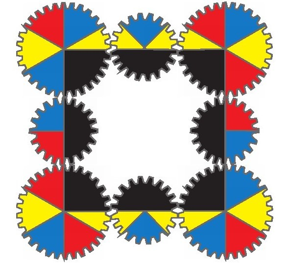
37
1.上，2.下，3.上，4.下。
38
1.埃及绳子能够做成许多种不同的面积为4单位的多边形。来自宾夕法尼亚州奥克蒙特的埃尔顿·M.帕尔默创造性地将这个问题与多联骨牌联系在一起，特别是将其与四格拼板联系起来。在5个四格拼板里，每一个拼板都是多种解法的基础，只需要增加或减少三角形，使之长度均为12即可。下面用五种不同的四格拼板给出了一些解法。
2.任何面积在0到11.196之间的图形都可以被埃及绳子所包围。尤金·J.普特泽、查尔斯·夏皮罗与休·J.梅茨都提出了下面这个星形结构的解法。通过对星点宽度进行调整，可以得到最大的面积就是一个正十二边形。
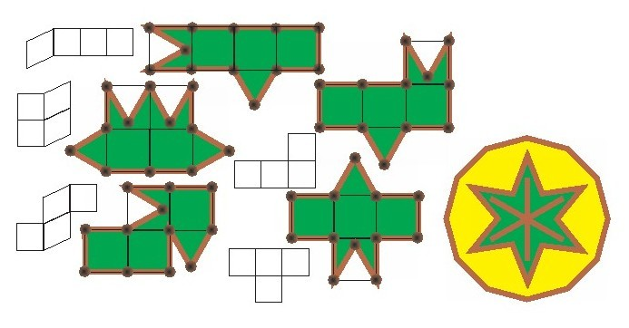
39
将9个三角形中的5个移除出去，就可以消除掉所有红色三角形了。移除红色三角形最快速的方法是移除三角形1，2，3，4与7，如图所示。总共有120个大小不同的三角形：其中59个三角形是朝上的，61个三角形是朝下的。
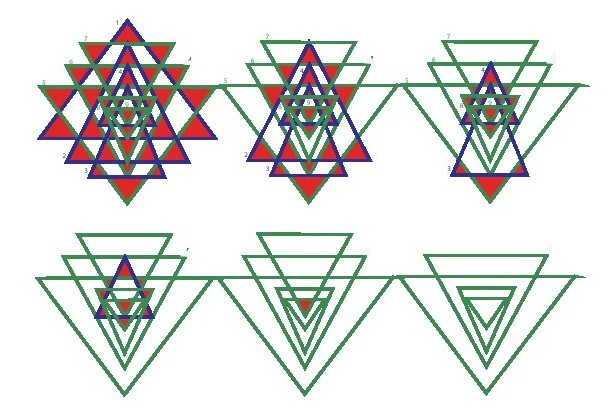
40
保存16807单位的面粉，具体是这样计算的：7×7×7×7×7=16807。古埃及人将数学推到了一个相当发达的水平。阿默士谜题可能是世界上最古老的谜题，是在古埃及的“莱因德纸草书”上找到的，由抄写员阿默士记录（时间大约是在公元前1650年）。在消遣数学著作中，有很多这个谜题的衍生版。
41
只有一个。其他人都是从圣·艾夫斯那里来的。阿默士谜题衍生出了许多不同的版本，其中就有圣·艾夫斯谜题。斐波那契在1202年出版的著作《算术书》里就提到了这个谜题。虽然他在那个时代是如何接触到莱因德纸草书的，至今仍不为人知。
42
如图所示，即便是轮到红子走，红子也无法阻止蓝子赢得胜利。
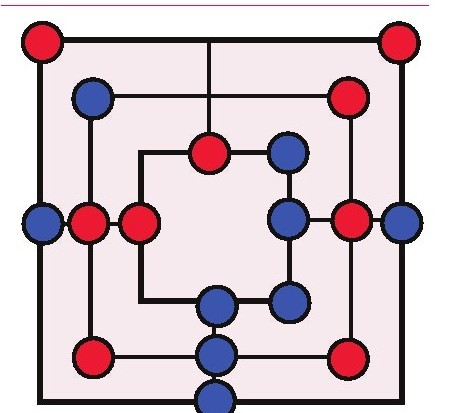
43
1.毕达哥拉斯的证明：
第一个图里的黄色正方形的面积等于第二个图形里两个黄色正方形的面积之和，这以非常具有说服力的方式证明了这一定理。
2.虚线将列奥纳多的图表分割为四个全等四边形。
3.巴拉瓦莱的证明：
卡瓦列里定理能够对第四步进行解释：如果一个平行四边形在没有改变自身的高度与底边长度的前提下发生变形，那么这个平行四边形的面积不会发生改变。
44
如图所示：
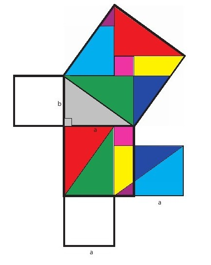
45
俄狄浦斯是这样解答这个问题的，他说：“人——只有在婴儿时期是用四条腿在地上爬行的，在他成年后就用两条腿走路，而当他老了之后，除了双腿之外，还要加上一根拐杖。”
46
四列十全的数字可以按照（10！）/（2×3）种不同的方法进行排列，也就是说有604800种不同的排列方法。
47
如图所示：
高斯只花了几秒钟的时间就发现了其中隐含的数学模式，然后对此进行了概念化的处理，知道了在加法的序列当中，有50对和为101的数，于是就得出了总数为5050的答案。
他并没有使用计算器或笔来计算。高斯提出的创造性方法就是，对于任何数字n, n不一定等于100），一般性的计算模式是1+2+3+4+……+n=n（n+1）/2。
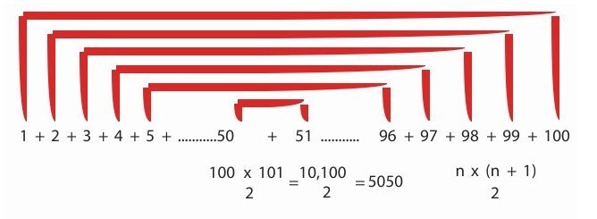
有趣的是，这种一般性公式同样也是三角形数的公式。古巴比伦出土的楔形文字石碑就清楚地表明，计算三角形数的公式在古代就已经出现了。对于任何数字n来说，它的三角形数（或者说第一个n整数的总和）都可以通过n（n+1）/2这个公式进行计算，这也正是高斯在面对n=100时所使用的方法。古人将这一公式以有形数的方式进行了视觉呈现。
48
第三根棍子是按照黄金比例折断的。
芝诺的结论就是，阿喀琉斯要耗费无穷无尽的时间才能赶上这只乌龟。阿喀琉斯只能越来越接近乌龟，但却永远无法赶上乌龟。他所走的路可以分割为无限个部分。在一个移动的物体走完某一段距离之前，它必须首先走完这段距离的一半路程。在它走完这段距离的一半之前，必须要走完这段距离的四分之一路程，依此类推。最初的距离是不可能走完的，因此，这样的运动过程是不可能存在的。
49
我们都知道运动是可能的，芝诺的这场赛跑的第一个漏洞就在于，假定了无限个数字的总和始终也是无限的，但是这样的假定是错误的。1+1/2+1/4+1/8+1/16+1/32+1/64+……=2，这被称作几何级数（几何级数就是指一个数字序列始于1，后面的项都是前一项与某个固定的数字的乘积，比如说这个固定的数在这里就是1/2。当这个固定的数小于1时，那么该无穷几何级数就会收敛于一个有限数）。
阿喀琉斯所走的路程以及他要追赶乌龟所花的时间，都可以通过在固定数x小于1的情况下形成的无穷几何级数去解答，因此，阿喀琉斯为了赶上乌龟所走的总路程并不是无限的。同样的情况也适用于他所花的时间。假设阿喀琉斯让这只乌龟先走10米的距离，他每秒走1米，是乌龟前进速度的10倍。阿喀琉斯只需要花5秒钟就能走到一半的距离。剩下的一半距离只需要他花费2.5秒的时间，依此类推。根据我们之前提到的无穷几何级数，他只需要10秒钟就能走过这段10米的路程。当乌龟到达11米的位置时，我们知道阿喀琉斯已经超过了这只乌龟，在11.11米位置上。为此，阿喀琉斯花费了11秒的时间，赢得了这场看似永远无法获胜的赛跑。
芝诺悖论的有用之处，就在于它催生了收敛无穷级数的概念。它凝结了许多数学概念的成果，其中最主要的一个就是极限的概念。在文艺复兴时代，人们重新对各种悖论产生了浓厚的兴趣，500多种不同的悖论都以书籍的形式出版了。
50
所需的颜色种类如图所示：
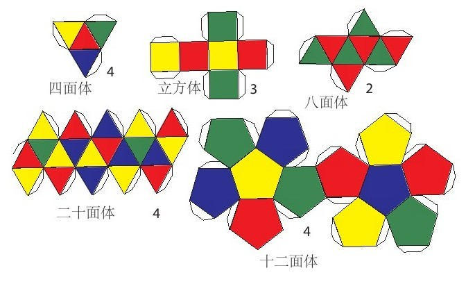
51
如下表所示：
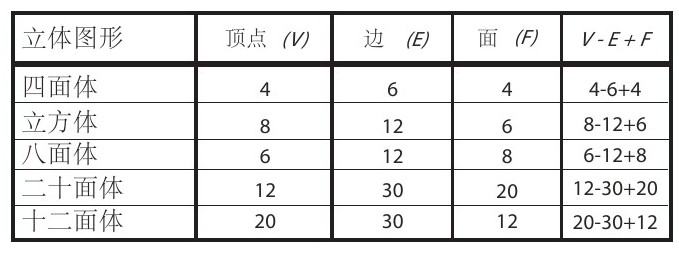
52
谜题一：60种不同的方法，与十二面体的每一个面的五个位置都是相对应的。
谜题二：丢失的颜色分别是1-2-3-4。
谜题三：这个横截面可以是三角形、正方形、长方形、五边形、六边形和十边形。
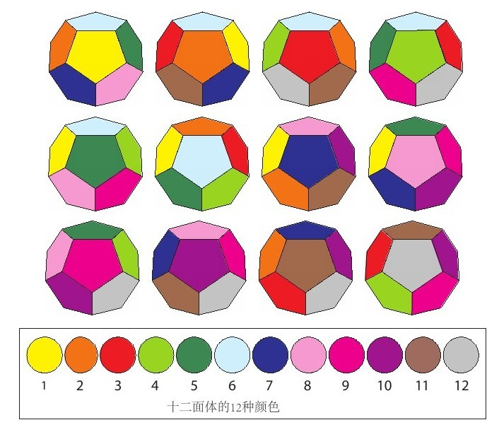
53
瓷砖可以分割为16个等边三角形与32个内角分别为15°、15°与150°的等腰三角形。
这个正方形瓷砖面积的四分之一等于十二边形外的面积。
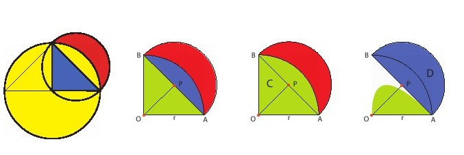
54
要求红色月牙的面积，只需证明它的面积等于四分之一圆中的三角形的面积就可以了。如图所示，O为四分之一圆的圆心，AB为半圆形的直径。P点为半圆形的圆心，也是AB线段的中点，OA为四分之一圆的半径r。
OA=r，那么AB=r√2，因此，这个四分之一的圆的面积就是：C=1/4r2π
直径为AB的半圆的面积是：D=1/2（r√2/2）2π=1/4r2π。
因此，C=D，因为蓝色月牙是C的一部分，同时也是D的一部分，因此月牙的面积就与三角形OAB的面积相等，从而证明了这个定理。如图所示：两个红色月牙的面积总和等于蓝色三角形的面积。四个红色半月牙的面积总和等于蓝色正方形的面积。
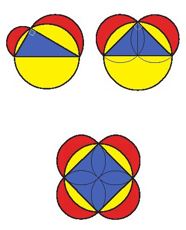
55
如图所示：
黑色六边形的面积等于6个红色月牙的面积与2个红色半圆的面积的总和。六边形的面积加上3个直径为AB的圆形的面积，等于大圆的面积加上6个月牙的面积。如图所示：
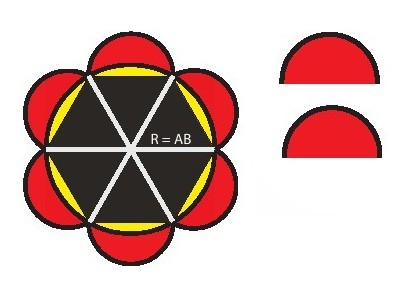
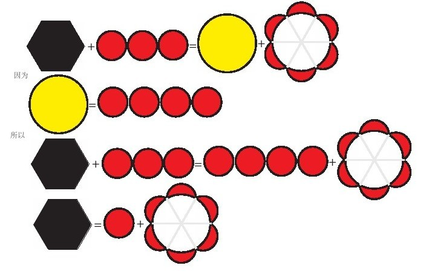
六边形的面积等于直径为AB的圆的面积加上6个月牙的面积，如图所示。
56
算盘可以按照下面两种方式进行操作。个位槽中保留和基数一样多的算珠。在个位槽的算珠放满之后，可将一粒算珠放在十位槽上，然后清空个位槽上的所有算珠。
或者，个位槽的算珠比基数少一个，就需要先增加一个算珠，使这个个位槽满了之后再将它清空。那么，下面这幅图代表的是一个什么数字呢？
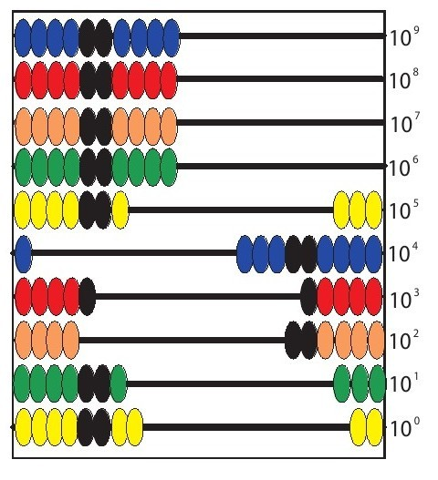
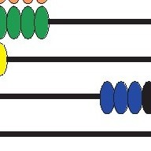
57
黎曼猜想暗示了质数分布的许多结果。经过恰当的概括，这被一些数学家视为纯数学领域内最重要的一个尚未解决的问题。
数论的许多其他问题，比如质数分布问题，都与黎曼猜想存在着一定的关系。因此，回答这个问题将为许多其他的问题提供深刻的洞见。比方说，质数定理将会让我们对小于某个已知数的质数数量有一个很好的估算，而黎曼猜想能帮我们推测这个估算值的准确性。
58
在过去数百年里，寻找质数的模式是一项艰巨的任务。小于数字1000的最大的质数就是数字997，而大于1000的最小质数就是1009。这两个数字之间相差了12，所以表格末位应该填上紫色。
59
一个力对于一个点的力矩等于该力乘以该力到该点的垂直距离。在密度均匀的杠杆上，离支点等距离的各单元重量都可以平衡。
杠杆能够将小力的机械能转变为大力的机械能。一个重物可被其重量1/5的力抬升一小段高度，这就是机械效益。当作用力与支点的距离是重物距离支点的5倍时，提升这个重物，它就需移动5倍于重物提升的距离。
你可以推动把手移动一大截，让刀刃移动一点点，但如果使出更大的力，你就能运用杠杆原理搬动更重的泥土。当你使用铁锹时，记得让铁锹的支点离地面更近，你就可以用更少的力。
60
根据一个物体（O）自身的重量和它在浴缸中排出的水的重量，就可以求出这个物体的密度。与物体O有着相同体积的水所受的重力被称为物体O的浮力。物体O的重量与排开的水的重量之间的比值，就被称为物体O的比重。
第一步：一块金子的重量与那顶存在疑问的皇冠一样重。
第二步：将这两个相同重量的物体浸在水中后浴缸中的水位刻度记录下来。如果这两个物体放入水中之后，水位上升的高度是完全一样的话，那就证明这顶皇冠是用真金做成的。但是，现实情况并非如此。皇冠让水升起来的高度更多一些，说明这顶皇冠肯定是掺杂了比黄金密度更小的铁类物质，从而让其体积比真金的体积更大一些。因此，这顶皇冠是掺假的。除此之外，阿基米德在其他领域内的重要发现，也让他的声名日隆。他发现一个物体在液体中能够获得一种浮力（也就是说，这个物体会变得更轻一些），这是因为被称为浮力的东西产生了一种向上托举的力，这种力正好等于被排开的液体的重力。阿基米德的这一发现实际上奠定了流体静力学的基础。自从阿基米德发现这一现象之后，这一方法就被用来分析金属、鉴定珠宝和测量物质的密度。我们可以运用阿基米德原理，对排出相同体积的水的物体进行比较。物体重量与水重量之间的比值就被称为这个物体的比重。
比重=物体的重量/同等体积的水的重量。
61
在单一的滑轮组系统里，若是我们忽略摩擦力的存在，那么所获得的机械效益是可以通过作用于重物上的力的绳索的长度去计算的。
在我们的这个例子里，机械效益等于6，而人们可以使出足够大的力气去提升这个重物。重物受到的作用力会受惠于机械效益而得到增加。无论重物移动的距离是多少，与绳索自由端移动的长度相比，实际上都是按照同等的比例在减少的。
在平衡状态下，作用于轮轴的力为零。这意味着滑轮的轮轴上受到穿过滑轮的两条绳索的力是完全相等的。
滑轮以这样简单的方式以距离交换力，你可以出更少的力气，但需要拉动更长的距离。
62
让人惊讶的是，在第七组里，我们就能够找到前面十个数字的完整组别（0，1，2，3，4，5，6，7，8，9）！
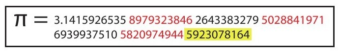
63
让人惊讶且违反直觉的答案就是，外切圆与内切圆不可能变得无限大（或无限小）。在这两个例子里，都会存在一个有限的固定值。在外切圆与外切多边形的例子里，最大圆的限定大小是8.7单位（而在内切圆与内切多边形里，这个数字则是1/8.7）。在这两个例子里，限定的多边形会有无数条边，最终变成一个圆。有趣的是，在1940年，卡斯纳与纽曼率先给出了这个问题的答案，他们公布的结果是12个单位，这被认为是正确的。直到C.J.布坎普在1965年提出了正确的答案（8.7个单位）。
特别设计出来的具有美感的图形，以非常具有说服力的视觉方式将这个问题的理念呈现出来（见P82页左图）。
白色的区域表明，一个有无数条边的多边形与有限大小的圆形之间，增长范围是有限的。
64
如图所示：
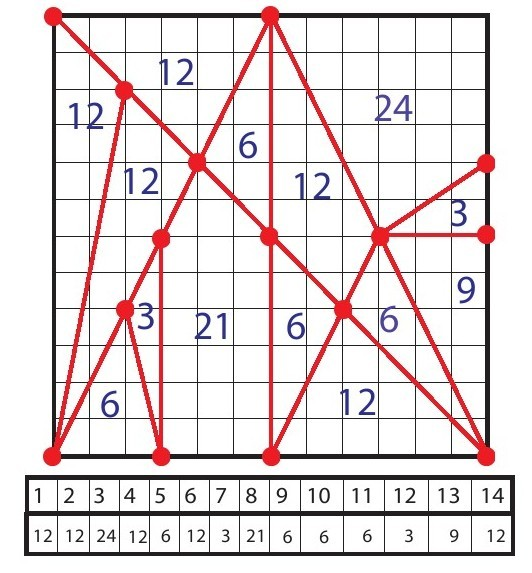
65
在所有的答案里：
1.第六块与第七块是一样的（按照我们的颜色模式，它们的颜色都是一样的，分别是红色与黑色）。
2.第一块与第二块，第九块与第十块，第十一块与第十二块，始终都会成对出现（如图中的蓝色与黑色，红色与黑色）。
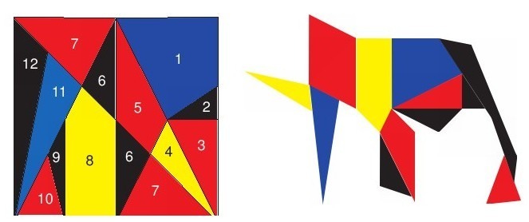
66
地球沿赤道的周长是40075.16千米。据说，埃拉托色尼计算出来的数值在39690～46620千米之间，这已经相当了不起了。
67
如图所示：
左边的四个形状有着相等的面积。右边的四个形状有着相同的周长。两个圆是全等的，并且有着相同的面积与周长。
右边的另外三个形状有着相同的周长，它们的面积都比左边三个形状的面积小。
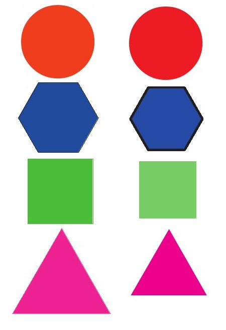
68
最早实际运用蒸汽的尝试是50年希罗的“开门蓝图”设计。靠着简单的机械原理，运用链条、滑轮、杠杆、装着空气与水的容器，完成了这一“神奇”的壮举：祭师点燃祭台上的火，两个容器里的空气在加热之后开始膨胀，将水从较低的球形密封器推到了虹吸管，然后传递给了悬挂在滑轮组上的篮子。降落的篮子将会开始拉扯绳索或链条，从而驱动铰链，让大门“神奇”地打开。当火熄灭之后，水就会渐渐冷却下来，由于右下角平衡锤的运动，门又会自动关闭。
69
约瑟夫斯与他的同伴只有站在第31个位置与第16个位置，才能逃过一劫。如图所示：
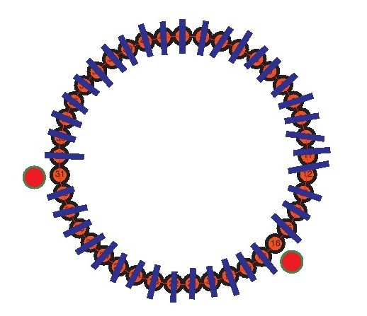
70
项链上最低的三个环就是博罗米恩环，这三个环是相互联系在一起的，这是以意大利文艺复兴时期一个用这些环作为徽章的家族的名字来命名的。
如果你从底部开始的第二排切断两个环中的任意一个环，那么你就能够将这条项链分割为最大数量的部分——三个部分，分别包括1，1，9个环。
71
用通俗的话来说：丢番图的青年时光为他人生的1/6，接下来再度过人生的1/12后开始长出胡子。再度过人生的1/7之后，他结婚了。结婚五年后，他有了一个儿子。儿子的寿命只有他寿命的一半。丢番图在他的儿子去世四年后也去世了。请问，丢番图活了多少年？下面这个方程式可以反映丢番图一生的各个阶段：
1/6 x+1/12 x+1/7 x+5+1/2 x+4=x
最后解出x等于84，也就是说丢番图活到84岁时才去世。
72
1.无穷；2.接近（某个数值）；3.等等；4.小于或等于；5.等于；6.因此；7.和值；8.大于或等于；9.小于；10.平方根；11.与……相似（成比例）；12.对应于；13.相交圆；14.正负号；15.约等于；16.全等于；17.不等于；18.直径；19.周长；20.正切；21.半径；22.扇形；23.圆弓形；24.不规则三角形；25.斜方形；26.平行四边形；27.梯形；28.菱形；29.等边三角形；30.直角三角形；31.圆面积；32.等腰三角形；33.锐角；34.直角；35.钝角；36.全等的；37.四面体；38.平行六面体；39.立方体；40.球体；41.圆锥体；42.八面体；43.正五边形；44.正六边形；45.正七边形；46.正八边形；47.圆柱体；48.角锥体；49.正九边形；50.直四棱柱51.半圆；52.平行线；53.交点；54.割线；55.弧形；56.圆心角；57.圆周角；58.外切圆；59.内切圆；60.垂线；61.阶乘；62.圆周率；63.百分比；64.矢量AB；65.因为；66.证明结束；67.自然数；68.整数；69.a不属于b；70.存在；71.线段AB；72.直线AB。
73
首先，他带着山羊过河，然后返回；接着，他带着狼过河，然后带着山羊返回，接着，他带卷心菜过去再返回来，最后将山羊带到对岸。
74
下面是这趟旅程的安排方法。只需要跑七次就可以了。我们四个人都是从空间站里开始出发的：里格列安、德尼尔班、陆地生物与我。
1.将德尼尔班送到出发台上。
2.我独自回来。
3.我将里格列安送到出发台上。
4.我带着德尼尔班回来。
5.我带着陆地生物到出发台上。
6.我独自返回来。
7.我将德尼尔班带到出发台上。
我们都能够经过气闸，好好地享受那位美丽女主人的热情招待。
75
如图所示：
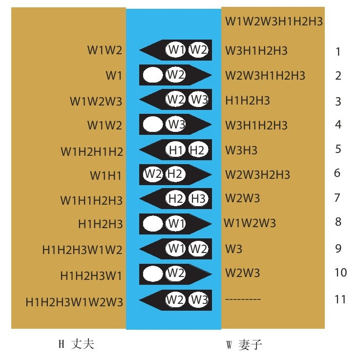
76
S代表士兵，B代表男孩。如图所示：
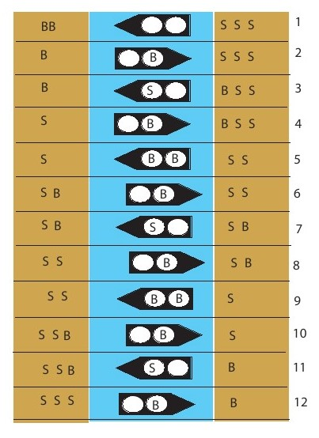
77
如图所示：
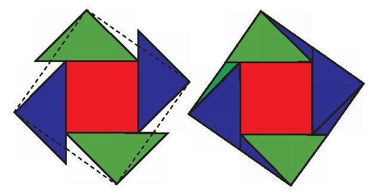
78
如图所示：
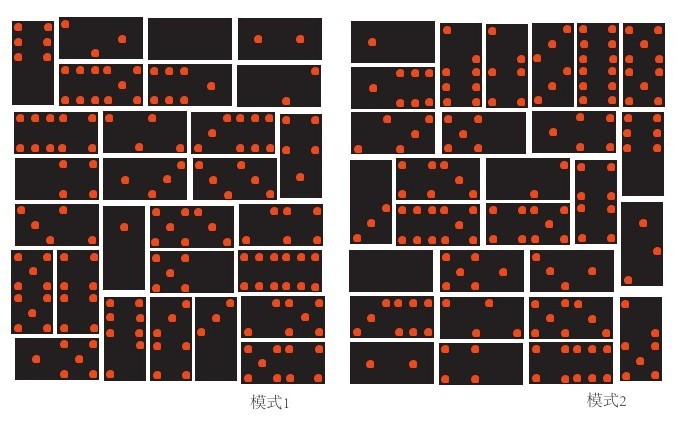
79
1月：1，2月：1，3月：2，4月：3，5月：5，6月：8，7月：13，8月：21，9月：34，10月：55，11月：89，12月：144。现在，熟悉的数列展现了每个月成对兔子的数量，首先是从1月开始的（此时，只有第一对兔子），然后直到12月。
在这年结束的时候，总共会有144对兔子。
80～81
每一个自然数都可以用不同的非连续性斐波那契数字以不止一种方法表达出来。比方说，232就可以按照下面的方式表达出来：如图所示：
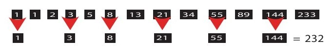
按照定义，前面两个斐波那契数是0与1，接下来每一个数都是之前两个数的总和。一些数学书还将0省略掉，从两个1开始。如果我们拿起计算器进行计算，看看这些小数，就会发现这些数彼此之间会变得越来越接近，并且接近某一个让人吃惊的极限。这个真正让人感到惊讶的结果就是黄金比例。谁能想象到，这一看似没有什么特别的线段划分（当初欧几里得纯粹是出于几何的目的进行的划分），以及人造的数列，竟然会对数学与科学产生这么重要的影响！黄金比例在自然的基础建构过程中扮演着重要的角色。我们已经提到了，我们可以用不同的起始数去形成一个相似的递归数列。比方说，卢卡斯数列就是始于2与1。因此得到的数列就是2，1，3，4，7，11，18，29，47，76，123，……，除了前三个数之外，卢卡斯数列的数字其实都不是斐波那契数。那么，我们还是要问，斐波那契数列与卢卡斯数列是否存在着什么关系？是否有着一丝可能存在着重复数列呢？是有关系的。如果我们用卢卡斯数列的数或任何递归数列的数去进行上述过程——那么它们都会逐渐接近黄金比例，这是黄金比例、斐波那契数与毕达哥拉斯定理之间存在的惊人巧合。
82
序列里的下一个正方形的面积将是第14个斐波那契数377。
83
这样的模式是由25个以三种不同方向的连环闭锁的环组成的。形状一：9个全等形状。
形状二：四种不同方位的12个全等形状。
形状三：四种不同方位的4个全等形状。
如图所示：
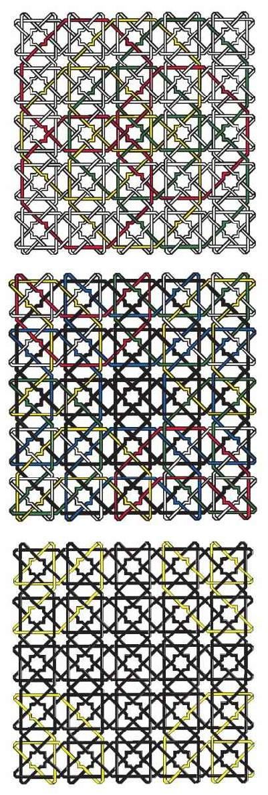
84
根据能量守恒定律——这一科学的基础定律——永动机是不可能制造出来的。达・芬奇可以说是最早提出利用重力去制造永动机的人。他的想法是，一旦这样的机器运转起来，舱室里的球转动起来，下降的轮子那端产生的力矩比上升那边的力矩更大一些。这将会让轮子沿着顺时针的方向转动。当连续有重物经过顶端的位置时，根据重力理论，它们就会往外下落，从而让轮子始终处于转动的状态。但是，如果我们让整个轮子转一整圈，让每个球回到它们一开始所处的位置，那么球体所做的功至多等于轮子所需要的能量。整个系统无法在运动的过程中获得能量。轮子也不会永远地转动下去：轮子只会稍微移动一下，然后便会保持一种平衡的状态。轮子的运动可以用矩定理来解释。
85
伽莫夫的想法是基于数字“6”与数字“9”的转动对称性构想出来的。将“6”贴到轮子的辐条上，一旦轮子转动起来，“9”就会出现在轮子辐条的顶端位置，它的重量会让轮子永远地运动下去。遗憾的是，数学想法并不总是能够转变成为物理现实。“不可能的”，你会这样说。所有尝试去建造永动机的努力都一一失败了。从古到今，还没有人成功地做成永动机，但还是有不少人在尝试。最后，这些永动机被制成结构复杂的赝品，摆在商店的橱窗边，吸引来往顾客的目光。
86
如图所示：
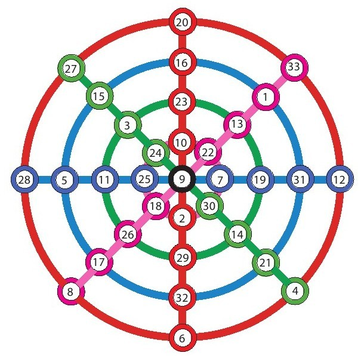
87
棋盘上麦粒的最终数量就是几何级数的结果，即264-1=18446744073709551615。
几何级数是这样的一个数列，数列上第一个数之后的其他数，都是之前的那个数与一个非零数的乘积，那个数通常被称为公比。几何级数各个项的数列就被称为等比数列。
88
这是多种解法中的一种。
如图所示：
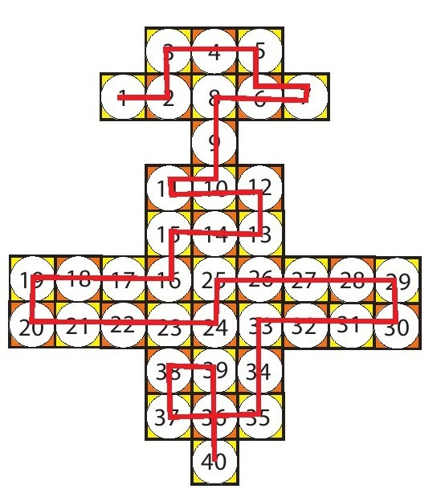
89
鸡蛋内部的结构其实是非常简单的：一个装满黏性流体的小圆筒以倾斜的方式放在鸡蛋内部。一个较小的沉重活塞在圆筒内部缓慢地移动。当鸡蛋处于垂直位置时，活塞就会从最高点降落到最低点，这个过程被设定为大约70秒。在中间10秒的下落过程中，鸡蛋可以立在尖端上。
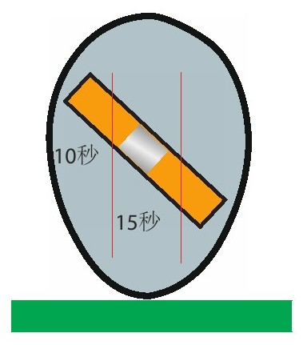
90
如图所示：
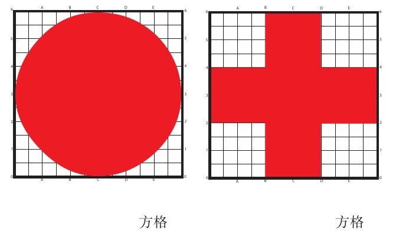
91
汉斯·霍尔拜因是亨利八世国王的宫廷画家，创造出恐怕是历史上最著名也最具冲击力的隐藏变形画。他的画作《大使》描绘了两位法国大使让·德·丁特韦尔与乔治·德·塞尔夫。如果站在斜对着这幅画右边的位置，你就能看到一个头骨。
这幅画一开始挂在让·德·丁特韦尔城堡的楼梯走廊上，让那些左下方以及楼梯下方的人都能看到。对于这个头骨的象征意义，很多人都给出了不同的解释，有些人说这代表着画家的名字——霍尔拜因，在德语里的意思是“中空的骨头”。不过，确切的原因至今尚不清楚。
92
如图所示：
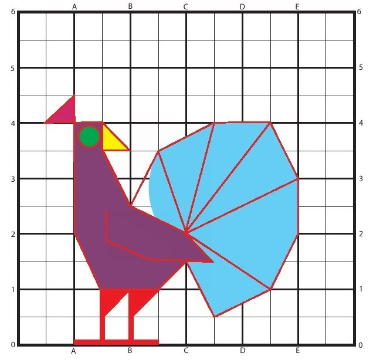
93
如图所示：
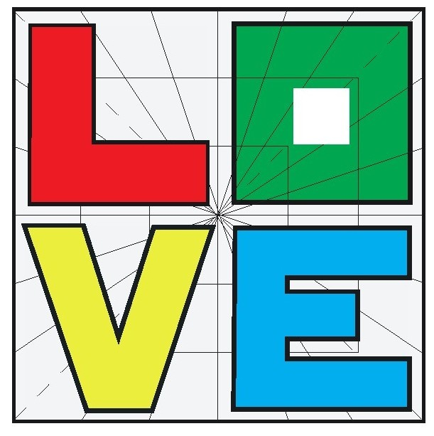
94
这个单词就是“mastermind”。
95
隐藏的信息是“I llusion is the first of all pleasures.”（在所有的乐趣当中，幻觉是排在首位的。）
96
如图所示：
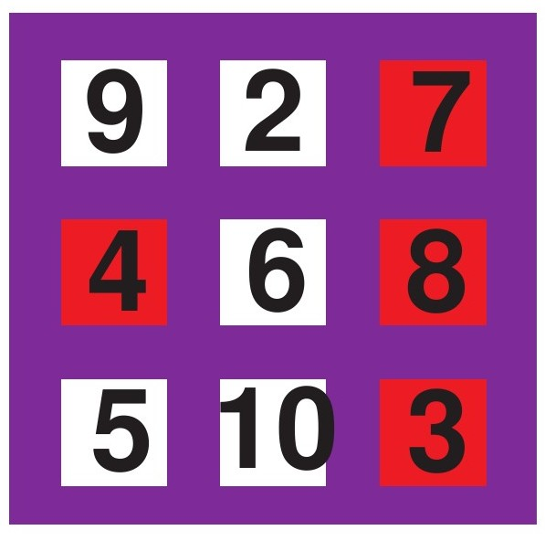
97
如图所示：
98
如图所示：
99
一个4阶幻方。让人惊奇的是，有86种不同的方式可以达到常量34。所有这些方法都会形成有趣的图形模式，如图所示113 to puzzle 116（用红线或蓝线连起来的部分之和均为34）：
100
最少需要16步。请注意，骑士棋子必须要按照相同的方向沿着一个圆圈转动。
如图所示：
101
至少需要16步：1-3-4，2-4-9，3-11-4，4-4-3，5-1-6，6-6-11，7-12-7，8-7-6，9-6-1，10-2-7，11-7-12，12-9-4，13-10-9，14-9-2，15-4-9，16-9-10。请注意，这两个问题都可以用平面图做示范来解决。棋盘上的正方形可以作为一个图形的节点，而它们之间可能的移动步骤则是图形的连接线。谜题一的图形可以通过两个拓扑学变化表现出来。解答方法是非常容易得到的。解答的方法并不是唯一的，因此，每个谜题我们给出了一种解法。——
102
你的路线将会是一条斜航线，这是一条球面螺旋线，也被称为等角航线，这条线会以相同的角度（不是直角）去切割经线。
103
因为在原来的基础上进行分配是不可能的，这三个兄弟可以从邻居那里借来一匹马，然后再进行分配。现在，他们就有了18匹马，就可以按照一开始的要求去进行分配了（在分配完之后，他们需要将之前借的那匹马还回去）。三个兄弟得到的马匹数量分别为9匹、6匹与2匹。
因为1/2+1/3+1/9=17/18＜1，而9＞17/2，6＞17/3，2＞17/9，因此每个兄弟实际上得到的都比之前更多。
104
如图所示：
当然，球体滑落到平面的尽头时所花的时间取决于斜面的坡度，而球体在斜坡底端的速度并没有发生改变。无论斜面的坡度如何，球体在斜面底端的速度都是一样的。假设一个球体在下落一秒内所走的路程为单位距离，那么这个球在第二秒内所走的路程就是这个单位距离的4倍，而在第三秒内所走的路程则是这个单位距离的9倍，第四秒内所走的路程则是这个单位距离的16倍。你可以通过在尺子上滚动一个球体，对此进行检验——前提是斜面的角度足够小，球体会在四秒内继续保持转动。1，4，9，16，25，36，49，64，……，这一让人印象深刻的数字序列以一种视觉化的方式将球体的运动模式呈现出来。在经过“n”秒的下落之后，这个球体会在n2的刻度上，也就是说，一个下落球体的行程会随着时间的平方变得更大。有趣的是，不管斜面的坡度如何，这都不会发生变化。伽利略利用斜面坡度去进行他的那个著名的自由落体实验，因为一个球体在斜面上的运动与自由落体运动是相似的，只存在一点区别，那就是球体在斜面上的运动速度要慢一点，更容易观察与测量。
105
很多数都不是平方数。因此，是否存在着比平方数更多的数呢？每当你遇到两个无限集，试图比较哪一组更大的时候，那么你就很可能陷入伽利略提出的这种悖论。你应该知道：
1.无限集之间无法比较大小。
2.无限集不同于有限集——在无限集里，你能找到“等于”整个数集的子集。
3.“配对”或是“点对点对应”的计数方法对于无限集并不奏效。
106
一个惊人的事实就是，钟摆摆动的角度较小时，钟摆摆动的时间与钟摆的大小并没有关系，而是与钟摆本身的长度有关，这一事实与我们的直觉是相悖的。无论钟摆的摆动幅度是大是小，这个摇摆的周期都是一样的。钟摆的奇怪运动遵循着某些法则：1.振动的周期并不取决于钟摆所具有的重量。2.这个周期并不取决于移动的距离。
3.振动的周期与钟摆长度的平方根是成正比的。一个钟摆的周期，或者说来回一圈所需要的时间，都是可以通过一个简单的公式去表达出来的：T=2π√（L/g），其中L代表钟摆的长度，g代表重力加速度，也就是9.80米/秒2。因为g是除了长度之外唯一的变量，因此利用钟摆就可以很轻易地测量出一个星球的引力。1米长的钟摆在地球上完成一个周期需要1秒，在月球上则需要2.5秒。
107
这是一个违反重力的机械悖论。
一个物体能够对抗重力，不断向上运动吗？利伯恩的双锥体，灵感也来源于伽里略。
双锥体看似在往上运动，其实它是下落到较低的位置，若是你从侧面看就会发现这一点。当双锥体似乎在往上移动的时候，随着轨道之间的距离不断增加，双锥体的重心其实已经下移了。这看似是反重力的。
如图所示：
108
半径的总和是一个常量，并且与所选的三角形划分无关。通过对两组圆进行比较，就能看出来。这个具有美感的定理是一个算额问题。根据古代日本数学家的惯例，这样的定理一般会刻在木板上，悬挂在寺庙里，以表达对众神及这个定理发现者的敬意，这是19世纪日本比较流行的做法。
109
如图所示，可以按照这样的方式拿走六个球，并且这个箱子不会发出任何声响。
110
可以做到的！你可以将两种方式组合起来，这样一共可以装入106个球，如图所示。再说一次，最好的解答方法并不一定就是最常规或是最有序的方法。无须赘述，这种包装问题对于生产制造行业来说是多么的重要——特别是你想要在一张纸上切割出尽可能多的圆形时。
111
1.砝码只能放在天平的一端：要称出从1到40千克连续重量的重物，我们需要两套这样的6个砝码：1-2-4-8-16-32=40千克
2.砝码可以放在天平的两端：对于从1到40千克的连续重量的重物，在这种情况下，我们需要三套这样的4个砝码：1-3-9-27千克。
112
要安排放置三个一样的盒子，有六种可能的方法。一次称量能够决定两种可能。两次称量有四种可能，三次称量有八种可能，依此类推。
一般来说，n个砝码将会最多决定2n种可能性。
在我们的这个例子里，假设我们有
测重1：1＞2
测重2：1＜3
结论：3＞1＞2，那么这个问题就解决了。如果测重2：1＞3，那就存在着两种可能性：1＞2＞3或是1＞3＞2，而第三次测重需要在2与3之间进行比较。
113
最多需要进行三次测重。将21根棍子分为三组，每组有七根棍子。将其中两组棍子分别放在天平的两端，就会出现两种可能的结果：
a）天平保持平衡；b）天平出现倾斜。
如果天平两端保持平衡，那么包含着较重木棍的组合就在尚未进行测重的一组里。如果天平出现倾斜的情况，显然向下倾斜的那个组里就包含着那根较重的木棍。然后将较重的这个组分为两组，每组有三根棍子，剩下一根棍子，然后将这两个组放在天平的两端进行测重。此时，又会出现两种可能的结果：
a）天平保持平衡；b）天平出现倾斜。
如果天平保持平衡，那么没有测重的那根棍子就是较重的棍子，也不需要再进行测重了。否则，就还需要进行一次测重，将剩下的那组拿出一根，剩下两根放在天平的两端进行测重。
114
八枚金币可以分为两组，一组是三对金币，一组是一对金币。
如图所示的两种可能性里，两次测重就足以找出那一枚伪造的金币。在第二个结果的第二次测重里，如果天平处于平衡状态的话，那么伪造的那枚金币当然就是没有进行测重的那一枚金币。
115
球体体积间的关系类似于以它们半径为棱长的立方体。两组处于平衡状态的球体体积都是729单位，如图所示：
116
1.存在着六种不同的平衡状态（三对镜像情况）。
2.若是不将镜像视为不同的情况，那就有17种不同的平衡状态。通过随机对重物进行摆放从而达到平衡状态的概率为4/100，也就是1/25，如图所示：
117
三个圆锥体与三个角锥体里的水刚好填满相同底面积与高度的柱体。这样的关系可以用如下公式进行表达：
圆柱体或棱柱的体积=底面积×高度，而圆锥体或角锥体的体积则是底面积与高度相同的圆柱体或棱柱体体积的三分之一。
118
按照笛沙格定理，四个三角形的延长线上的交点都落在这四个三角形与它们的阴影接触的一边上。这种限制的结果就是，其他周围的点都能够得到“自由”，每一个点都能够成为潜在的“光源”，或投影中心。
119
要建构下一排的数字，可以直接将其上方两个数字相加（左上方与右上方）。
120
如图所示：
等边三角形提供了一个解答这个问题的优雅的几何类比。等边三角形内的每个点都代表着唯一一种折断棍子的方法。三条垂线的总和是一个常量，并且与这个三角形的高相等，它同时也是这根棍子的长度。只有当这三条线的交点在一个中间较小的正三角形内，它们才能形成一个三角形。在这种情况内，三条垂线的任何一条都不会比其他两条垂线之和更长。另一方面，如果这些点是在中间三角形的外部，那么其中一条垂线肯定要比其他两条垂线的总和还要长。因为这个三角形的面积是整个较大三角形的总面积的四分之一，因此，随机选择一点的概率同样为四分之一。
121
因为微积分方面的内容不在本书所讲的范畴之内，我们还是通过直觉性的解释去解答这个问题吧。想象一下，在一个直径为6英寸的球体上有一个无限小的洞口，那么这几乎不会对整个球体的体积产生什么影响：任何直径大于6英寸的球体都能挖一个6英寸的小洞来穿过它。球体越大，这个洞也越大，因为它的深度要保持在6英寸。微积分告诉我们，剩下的餐巾环的立体体积保持不变，不管这个洞口的直径或球体大小如何。让人相当惊讶的是，穿洞之后的普通球体甚至和穿洞后的地球剩下的体积都是完全一样的。这听上去可能是违反直觉的，但是即便地球要比这些球体大上许多，穿的洞也必然要保持一定的比例，从而让这个洞的厚度保持不变。剩下的体积并不只取决于球体或这个洞的体积大小，而是取决于它们之间的比例关系——使这个洞的深度刚好是6英寸。现在，你可能已经发现了，这个问题就是圆弦环问题在三维空间上的模拟。下图通过视觉的方式呈现出这两个问题一些违反直觉的关系。
122
令人震惊的是，我们已经有了足够多的信息去计算这些环的面积。当我们计算出所有的环都有着相同的面积时，这听上去更是违反直觉。
环的面积只是取决于弦的长度，根据毕达哥拉斯定理，这些环的所有弦长S都是一样的。R 2=（R-h）2+（S/2）2=R 2-2Rh+h 2+（S/2）2较大圆的面积是πR 2。
较小圆的面积是πR 2=π（R-h）2=π（S/2）2
这两个圆的面积之差就是：
π（R 2-r 2）=π（S/2）2=π
因此，环的面积只取决于弦的长度与π。
请注意，圆的直径是没有给出的。如果我们假设较小圆的直径是0的话，那么环的大小就等于较大圆的面积——其直径的长度就是弦的长度。
123
二进制语言是一种计算机语言，这是基于两个数的系统，只使用“0”“1”（此处，分别用白色与黑色的圆圈来表示），这与开关的状态是完全对应的。二进制数左边的每一个位置都代表着下一位的最高幂次。如图所示：
124～125
一个球体有可能接触12个其他体积相等的球体，正如球体的第一层所显示的。在一个平面上，6个球体包围着中间的球体，而3个球体则被分别安置在上面与下面的位置。
一个球体一次所能“亲吻”的最多数量的球体为13个，正好可以装入一个直径为中间球体3倍长的球体中。
与“亲吻”数量相关的问题与数学领域内的多个分支都存在着联系，其中就包括纠错码——这些编码被用于在充满噪声的电路中传递信息。
接下来各层的球体数量可以通过一个简单的式子来进行计算：10F 2+2，其中F=频数（层数）。
第二层的球体数量等于42，而第三层的数量则为92。因此，在一个三层体系里，球体的数量为147。
126
摆线就是最速降线这个问题的解决方案。沿着摆线降落的球体是最快到达目的地的。这只是摆线诸多属性中的一个而已。处于降落过程的球体会沿着倒置的摆线滚动，并且要比其他任何路径所花的时间都短——无论是直线还是曲线，即便这条摆线本身的长度是最长的。让人感到惊讶的是，最短的路线（直线）竟然不是最速降线。因此，摆线又被称为最速降线或捷线。球体沿着摆线降落的早期，就能达到较快的速度，从而首先到达目的地。在某些情况下，球体可能会降到水平线以下的位置，然后再上升。更让人惊讶的是，处于降落过程的球体会在同一时间里到达，不管它是从摆线的哪一点开始下降的。伽利略发现，钟摆的周期只取决于其长度，只适用于振幅较小的情况。然而使钟摆绕着摆线运动时，这个结论对于任何振幅都是成立的。
127
如图所示：
128
答案见下图四个轮子：
红色：三比特的二进制数字，唯一的答案。较长的二进制轮子是用来对电话传送的信息进行编码或用于雷达扫描的。加利福尼亚大学数学家舍曼·K.斯坦就将这样的二进制结构称为记忆轮。它们还会被称为乌洛波洛斯环，这是以神话故事中那条吃掉自己尾巴的蛇的名字命名的。
绿色：四比特的二进制数。
黄色：五比特的二进制数。
蓝色：六比特的二进制数。
129
我们的直觉会认为，相对于地球的周长而言，1米是无足轻重的，所以绳索几乎不会挪动。但在这种情况下，直觉是错误的。
稍微分析一下就能解释其中的原因：2π（r+x）-2πr=1（米），
2πr+2πx-2πr=1（米），2πx=1，x=1/2π，x=1/6.28，x=16（厘米）
更让人震惊的是，这个结果与地球的半径没有任何关系，与乒乓球或网球的半径长度也没有任何关系。这个事实可以通过下面的图得到视觉化的呈现。
130
我们可以看到，最后的结果始终是平行四边形，这就是伐里农平行四边形。这一具有美感的原理被称为伐里农定理，它是以皮埃尔·伐里农（1654—1722）的名字命名的。伐里农平行四边形的面积是这个四边形面积的一半，而其周长则等于这个四边形两条对角线的长度之和。
131
一般来说，正多边形分割成为三角形的不同方式有1-2-5-14-42-132-429-1430-4826……，这些数字就被称为卡塔兰数，这是以尤金·查尔斯·卡塔兰（1814—1894）的名字命名的。卡塔兰数出现在许多组合学问题上。一个n边的凸多边形需要n-3条对角线去进行三角形划分，然后将之分割为n-2个三角形。
如图所示：
132
交叉点的数量（V）：9区域的数量（F）：11边的数量（E）：18
欧拉发现了一个公式，适用于平面上任何相互连接的图形，它还被称为欧拉示性数：V-E+F=2。在我们所提到的这个例子里，就是9-18+11=2。
展现出深刻思维洞察力的欧拉公式，是数学领域内最具美感与最重要的表达方式之一。
133
下面两个谜题是笔者本人创造出来的，旨在向天才的欧拉致敬。这两个谜题其实就是欧拉图形衍生出来的，可以运用欧拉定理进行解答。这些叶子可以视为一个图形的各个节点。如果一片叶子有偶数个交叉的话（也就是与其他的叶子出现了重叠的情况），那么雄性瓢虫就能进入并且离开，而一片有着奇数个交叉的叶子也是可以进入与离开的，但是当雄性瓢虫再次进入之后，就再也不能离开了。通过对这些叶子的观察，我们可以发现，唯一一片有奇数个交叉的叶子就是雌性瓢虫应该等待的地方。将拥有两个交叉的叶子连在一起，然后标记出多重相交的叶子，那么你很容易就能通过所有的叶子连接成一条连续的线，并且不需要重复。通常，根据欧拉定理，诸如此类的图形只有在0或2片叶子有奇数个相邻叶时，才能一笔通过。如果是“0”的话，你可以从任何地方开始，因为这是一个密封的环路。如果是“2”的话，这两片叶子就分别是起点与终点。这就是我们遇到的情况——起点有一片相邻的叶子，而终点则有三片相邻的叶子。其他所有的叶子都有着偶数片相邻的叶子。
134
非法入侵的飞船从左上方的星球进入，试图从右边最下方的星球离开，但却被在这里等候多时的守军所阻挡。从给出的图形来看，只有两个点有奇数条边。在不两次穿越同一条路线的情况下，是可以经过的，前提是这些点中有一个是始点或终点。我们知道上方（北边）的点是进入点，因此另一个较低的点是这条路线唯一可能的终点，或者说是唯一可能离开的地方。下图显示了一条路线：
135
这是著名的布丰投针实验的一个版本，你可以很容易地进行一番实验，并计算出圆周率的精确数值。法国数学家乔治斯·路易斯·勒克莱尔就证明了，如果一根针从某个随机的高度掉落到一张有许多条平行线的纸（这根针的长度正好等于两条平行线之间的距离），那么这根针穿过一条线的概率就等于2/π。
如果这根针的长度小于这两条线的距离，那么这根针穿过一条线上的概率为2c/π×a, a是两条线之间的距离，而c则是这根针的长度。因此，通过随机地将这根针扔许多次（n），并且计算针穿过一条线的次数（m），我们就能计算出π的实验值为：π=2c×n/a×m或是π=2n/m（在c=a的情况下）
这个结果一开始看上去非常神奇，因为这个答案与圆周率π是相关的。这个具有美感的实验在过去很长一段时间内都被世人遗忘，直到1812年，西蒙·拉普拉斯（1749—1827）出版了一本与概率相关的数学著作，重新提出这个投针实验，它才为世人所了解。1901年，意大利数学家拉扎里尼凭着巨大的耐心去做这个实验，他投了3408次针，获得的π值大约是3.1415929。这个结果所包含的误差只有0.0000003。你可以将自己得到的实验结果与作者的实验结果进行一番比较。
136
要想在100次投掷硬币的过程中得到100次正面的结果，过程如下：得到一次正面结果的概率是：1/2=0.50
得到两次正面结果的概率是：1/2×1/2=1/4=0.25
得到三次正面结果的概率是：1/2×1/2×1/2=1/8=0.125
得到100次正面结果的概率是：（1/2）100=1/1000000000000000000000000000000。从理论上来说，得到100次正面结果的概率是有可能的，但是这样的概率实在是低到让人难以想象，因为这其中必然会混杂许多正面反面的不同排列次序，同样，你想得到其他特定的排列次序也很难。在所有给出的排列次序里，每一种次序出现的概率都是相同的。
137
如图所示：
138～143
在3×3与4×4的棋盘里，完成一次骑士遍历是不可能的。5×5与6×6的棋盘分别有着128种与320种不同的遍历路线，其中一些路线是封闭的。在7×7的棋盘里，总共有超过700种遍历路线，而在8×8的棋盘里，总共有超过百万条遍历路线。
如图所示：
144
右边的图形也是松结。
145
交叉的绳子有八种不同的图形结构，其中只有两个有打结的情况。其余六种情况都只是线圈。即使线圈的两端被拉直，也不会形成打结的情况。因此，出现打结情况的概率只有25%。

如图所示：
146
加州理工学院的马克斯·德尔布鲁克在1960年获得了诺贝尔奖。他提出了一个具有美感的问题，并且给出了一个有36个连接的解答方法。刁远安在1993年给出了一个只有24个连接的解法，如图所示。刁教授的方法表明，有24个顶点的多边形是立方网格里最小的三叶结了，并且，在只有24个顶点的情况下，是不会有打结的情况出现的。
147
如图所示：
148
如图所示：
149
如图所示：
150
这是山姆·劳埃德发现的极为优雅的四个组成部分的解答方法。
如图所示：
151
如图所示：
A）对三块蛋糕总共进行12次直线切割，分别可以切3、4、5次，并获得7、11、16块蛋糕，总计34块。这个解答方法被视为最少切分的“最佳”答案，但是如果允许超过两次切割（或是两条以上的切割线）在一个点交汇的话，那么就还有其他的解。
比方说，分别对这三块蛋糕切割2、4或6次，最多能够分别获得4块、8块与22块蛋糕。其中一些切割的方式并不是最佳的。
这个问题是组合几何这一数学分支的一个简单例子，这是形状与数字之间的有趣结合。
B）要将蛋糕切割成完全相等的部分，我们就需要从蛋糕的中心位置出发，将每个蛋糕都切割成12块，一共就是36块（在这样的情况下，你和我都只能得到一块蛋糕）。
152
如图所示：
一般来说，要想获得最多数量的分割区域，就要试着让每一条全新的切割线经过之前的线段。按照这样的方式，第n次的切割会产生n个全新的部分。比方说，如果两次切割能够创造出四个部分，第三次切割对前两条线进行切割的话，那么将会产生三个全新的区域。这一法则可以从第一排里得到展现，这是获得最大数量的区域部分的一般分割方法。要想将区域数量切分最小化，方法也很简单：让所有切割线都处于平行状态，如最后几个例子所展示的那样。计算圆形最多能分割成多少部分，我们可以将一个圆形分割成某些已知数量的部分，这被称为圆形切割或蛋糕切割问题。最小的区域数量始终都是n+1，而n则代表着切割的次数。在最小数量与最大数量之间，我们始终都能够找到任意的区域数量。求切割线数量为1，2，……时分割出来的区域的最大数量，依次为：Sn=2，4，7，11，16，22，29，37，……
153
将一个四面体放入一个球体，将会产生最大数量的空间区域：这个数值就是15。
我们可以通过一个模型来解答这个问题。这些部分分别如下：四个部分是在顶点位置上，六个部分是在角的位置上，四个部分是在四面体的四个面上（原始的切割），再加上四面体本身，总数就是15个部分。这一数字是一般意义上的最大数量，三维空间也可以被四个平面进行切割。“蛋糕数量系列”可以按照1，2，4，8，15，26，42，64，93，……进行排列。
如图所示：
154
最少需要12根火柴，这12根火柴在8个顶点上汇集，每个顶点上有3根火柴。对于4根火柴在一个顶点上汇集的最好回答，就是海科·哈博特提出的104根火柴在52个点上汇集。到目前为止，我们还没有找到用少于104根火柴还能做到的例子。有趣的是，对于5根火柴以上的情况，目前还没有找到解答的方法。如图所示：
155
这个问题有一个惊人的答案：抵消的部分可以按照我们的想法要多大就能有多大，这听上去是不可思议的。当你将顶端位置的积木移动到其余的位置，使之保持平衡，那么其重心位置就会停留在下面的积木边缘。每当你移动一块积木，就会找到全新的一堆积木的重心位置——就是你所移动的积木加上其上面的积木的重心位置。每一块积木的边缘都能起到一个支点的作用，支撑起位于其上面的积木。具体到这些重心的位置，就可以知道第一块积木的重心的位置将会沿着第二块积木移动1/2个积木的长度，上面两块积木将会沿着第三块积木移动1/4个积木的长度，最上面的三块积木将会沿着第四块积木移动1/6个积木的长度，依此类推。当我们手上有着无限数量的卡片或是积木的时候，那么这个抵消的部分等于下列级数的极限发散：1/2+1/4+1/6+1/8+1/12+1/14+1/16+1/18+……，这被称为调和级数。速度比较缓慢，要想抵消哪怕是一小部分的重力作用，都需要很多的积木。比方说，在有52张卡片的情况下，最多的悬垂长度大约是2（1/4）张卡片长度。
156
1.你可以在立方体的垂直壁外面看到瓢虫。2.你可以在立方体的底部看到瓢虫。3.你可以在立方体内部的底板内上看到瓢虫。
157
在极端的情形下，当邮件是以偶数的方式进行分发的时候，那么每个邮箱都会有三封信件，除了一个邮箱里有四封信件，这就是邮箱里出现最多数量邮件的最少情形。
这是鸽舍原理一个非常简单的例子，鸽舍原理也叫狄利克雷抽屉原理，运用这个原理能够解答多种不同类型的问题。
158
虽然结果一开始并不是那么明显，运用相同的原理还是能让我们找到这个问题的答案。我们可以找到方法证明，必然有两个人的毛发数量是完全一样的。
我们可以估算一下一个人身体的毛发数量，简单方法就是先算出人体表面每平方厘米的毛发数量进行计算：再计算出人体的总面积，然后将这两个数值相乘，就能计算出人体毛发的数量总和。我们还可以将这个数值再乘以10，从而得到一个最高的上限值。按照这样的方法，我们就能够得到一个数值，这个数值就是1亿根毛发。
这个事实可以保证一点，那就是地球上至少有两个人有着相同数量的毛发。根据鸽舍原理，地球上有63亿人，所有人身上的毛发都少于1亿根，我们必然能够找到两个人有着相同数量的毛发。想象一下，我们有1亿间房，然后从1到1亿顺序给这些房间贴上标签。之后，我们将63亿人召集起来，让他们进入与他们身上毛发数量相同的房间，在第1亿个人进入与他们身上毛发数量相同的房间之后，会出现怎样的情况呢？
即便是最糟糕的情形，如果这些人都进入了不同的房间，那么依然还剩下许多人。因此，在1亿人之后，必然会存在着与之前1亿人中的某人毛发数量相同的人。
159
情况总会如此。
160
无论你怎样选择圆与三角形，链条始终都会闭合——第六个圆始终都是与第一个圆相切的。
161
如图所示：
三个绿色圆在接近无穷大的时候，就会变成一个三角形，然后中间位置的圆就会变成三角形的内接圆。
162
较小圆的面积是较大圆面积的九分之一。较小圆与较大圆之间的间隙等于两个更小圆的面积，总的面积就等于九个较小圆的面积之和。因此，黄色区域的总面积等于较小圆的面积，这又与红色区域的面积是相等的。
如图所示：
163
从455种可能的三元数组中，选出35种三元数组，才能得到这个谜题的7种答案中之一，以恰当的方式将105个数对放入这些三元数组中。每个三元数组都涉及三对数。
做出这样选择的方法有很多种，需要系统化的程序才能厘清。人们设计了一个极富天才的几何方法，来创造斯坦纳三元数组。如图所示，在外围的圆盘上，15个点沿圆周均匀地分布。内转的轮子镶嵌着有颜色的三角形，在沿着这15个点转动。这个轮子每次转动2个单位（逆时针），来到7个不同的位置，带来了7种不同形态的三元数组。
科克曼问题的经典设计在W.W.劳斯·鲍尔与H.S.M.考克斯特所著的《数学消遣与论文》里得到了阐述，后来修订的版本则是由塞德尔完成的。
斯坦纳三元数组系统并不是对每个n都适用的。n个物体的成对数量是1/2n（n-1）。而符合要求的三元数组数量则是成对数量的三分之一，即1/6n（n-1）。因为每一个物体都必须在一个三元数组里。
它只适用于当n除以6的时候，会出现余数1或3的情况。三元数组的次序以及数的次序都不会影响问题的解的基本模式。因此，斯坦纳三元数组系统只有当n=3，7，9，13，15，19，21，……的时候，才有可能成立。
斯坦纳三元数组系统在n=3的时候派不上用场。我们有三对数字，形成一个三元数组。“七只小鸟家庭”谜题是下一个斯坦纳三元数组系统，要解答它并不难。每一天都有三只小鸟飞走。在七天之后，每一对小鸟都会按照七个三元数组的方式回来。我们可以用1到7去对小鸟进行命名，找到其中的三元数组。
164
一般来说，这个问题涉及另一个问题：已知一个n阶的正方形棋盘，你可以在上面放置多少个“皇后”棋子，才能让每一个棋子都无法去“攻击”另一个棋子呢？类似的问题还有：要在游戏盘上放置多少个棋子，才能让两个棋子不处在同一排、同一列或同一对角线上呢？对于全部尺寸的棋盘来说，只有12种基本的方法（不将镜像或旋转视为不同的解答方法）。
这个问题也可以作为两个选手间的竞赛游戏。
165
对默比乌斯环进行二等分：结果会形成一个有一个面、两条边、两个弯扭以及双倍长度的结构。要是对默比乌斯环进行三等分的话，就会形成两个相连的带环，其中一个带环与原来的的默比乌斯环长度相同，另一个则是有两个弯扭的双倍长度的默比乌斯环。
166
最后的结果是形成一个相当有趣的结构，这个结构有两个面、三条边、没有扭曲，有两个洞。从拓扑学上来说，左上方的弯扭部分可以通过下面的部分加以抵消。
167
将曼宁图的表面二等分形成一个平面正方形环，这个环有两条边、两个面与零扭曲。
168
钟摆有一个让人着迷的属性就是，一旦钟摆处于运动状态，就能持续在相同的平面上进行运动，前提是没有受到外力的影响。在沙子下面，钟摆会改变运动的路线，只能这样解释，那就是地球在钟摆的下方不停地转动。钟摆明显的转动会随着其所处的纬度而发生变化。钟摆摆动的速度会在地球两极与赤道二者的转动速度范围之内，也就是说每个小时转动15°。因此，在地球的两极地区，钟摆将需要24小时才能完成一个完整的周期，但在赤道地区，钟摆就会在原来的位置保持不变。
169
如图所示：
170
当然，麦格雷戈地图只是一个愚人节笑话。
四色问题是可以进行解答的。现在，我们已经知道了四色定理，这个定理告诉我们，对于平面上任何地图而言，只需要四种颜色就足够了。
在提出这个问题之后，马丁·加德纳收到了成千上万封信件，里面的地图都是用四种颜色进行着色的。右图是其中一种解答方法：
171～172
一个封闭的凸面曲线的宽度被定义为两条平行线之间的距离。等宽的曲线都有着相等的宽度，不论这些曲线处于平行线间的何种方位。这样的曲线的数量是无限的，其中包括圆。圆拥有最大的面积；著名的勒洛三角形拥有的面积最小。两个不规则轮子所形成的轮廓就是等宽的曲线，其中一个就是勒洛三角形。具体的做法是从一个角出发，画一个圆弧，经过另外两个三角形。这样的曲线宽度在每个方向上都是与等边三角形的边长相等的。任何有着奇数边的正多边形都能像勒洛三角形那样堆砌起来，从而形成一个等宽曲线，就像我们提到的基于五边形的其他轮子。这样的曲线就被称为勒洛多边形。因此，这样的三角形就像是一个不断转动的圆，一旦三个轮子处于转动的状态，那么上面放着鸡尾酒杯的平面就会保持在相同的位置，不会出现倾斜的状况。勒洛三角形可以在一个正方形内旋转，这是瓦特发明方形钻头的理论基础。
173
如图所示，这有两种不同的解答方法：
174
有21对点。每一对点都可以从第三个点引过箭头来，箭头的方向指着每个点。如图所示：
175
1-柏林，2-开罗，3-纽约，4-巴黎，5-阿姆斯特丹，6-东京，7-伦敦。
176
解答这个问题的最简单方法，就是找到每一个哈密顿回路的加权，选择一个加权最小的环路。哈密顿回路的总数会从一个有n个顶点的图形的某个特定顶点开始，并且可以通过这条公式去进行计算：（n-1）×（n-2）×……3×2×1或是（n-1）！
从下面的表格里，我们可以看到解答这些问题所面临的困难。对一个有着多个顶点的图形来说，任何电脑程序都无法解决这样的问题。现在，我们还没有还找到高效的运算法则去解答流动推销员问题。我们只能找到使环路的加权值接近最小可能值的算法（近似算法）。
近似算法如下：
1.在环路可能开始或是结束的顶点上出发。
2.接下来选择的顶点是与加权值最小的边相连接的。
从第二个顶点出发，我们就能计算出这个环路的加权值：
4+8+11+2+10=35
将这一最小加权值环路得到的结果进行对比，我们可以发现从第二个顶点出发的所有环路，其中一个环路已经给出来了，其权值总和为29。
我们得出35这个结果要比从顶点2出发的最大的回路权值总和54更好。
还有其他近似算法能得到比近邻算法更好的结果。
如图所示：
177
如图所示：
178
谜题一：绿色的线；谜题二：红色的圆圈。
179
要求出这个问题的解，你需要首先计算出这九条狗可能组成多少对。你可以轻易地列出来，一共有36对，如图所示，然后你需要找出12个三元数组。很明显每个三元数组里都有三对数字，这就意味着总共有12个三元数组。你可以运用系统化的程序，通过选择三元数组的顺序来消除重复出现的数对：每一个组合都被称为9阶的“斯坦纳三元数组系统”。斯坦纳系统在组合理论领域非常重要。下一个斯坦纳三元数组系统是13阶的。一般来说，斯坦纳问题就是将n个数字排成三元数组，并且让每一对数字都只出现一次。数对的数量是：1/2 n（n-1）
符合要求的三元数组数量是数对数量的三分之一，也就是：1/6 n（n-1）
只有当涉及的数字都是整数时，这个三元数组的系统才可能成立。
斯坦纳三元数组系统的阶数是被6除后余数为1或3的数字。因此，n的可能值的序列就是：3-7-9-13-15-19-……，而三元数组的数量则是1-7-12-26-35-57-……
诸如此类的问题始于19世纪，一开始被视为消遣数学的问题，这是瑞士几何学家雅各布·斯坦纳发明的。现在，这样的问题却成为当代组合设计理论的核心问题，被广泛地运用到现代科学的诸多领域。
180
如图所示：
第一个能够产生直线运动的机械装置就是波塞利耶连杆，这是波塞利耶在1864年发明出来的。从理论上来说，这个点将能描绘出一条精确的直线。
181
下图以图解的方式呈现了著名的瓦特连杆的运作原理。当两根转动的杆（蓝色与绿色）长度相同的时候，红色连杆的中心（白色的点）在连杆的整个运转周期中将绘制出8种图形。其中部的运动轨迹非常接近一条直线。瓦特连杆真实的运动曲线是一条被称为伯努利双纽线的数学曲线，像一个拉长的数字8，它的一段非常接近瓦特想得到的直线。利用打了孔并固定了孔眼的卡条，你能轻易地制造出瓦特连杆以及其他的机械装置，从而进行这样的实验。
182
一开始，你的加速度就是地球表面的重力加速度：g=9.8m/s2。当你越来越接近地球的中心时，这个加速度就会渐渐减慢。当你经过地球中心的那一瞬间，你就会感觉自己一下子失去了重量，以时速27000千米的速度下落。在42分钟之后，你会到达地球的另一端。这是你这段旅程中最为重要的一瞬间。除非你能抓住某个东西，否则你回会花84.5分钟再摆荡回来。
183
如图所示：
很多人在面对这个谜题的时候，都会在大脑中生成一种概念化的积木，以至于不能以恰当的方式去放置骑手。但是，你也看到了，解答的方法其实是非常简单的。
骑手所用的缰绳必须放到左边，直到图能够以恰当的方式连接起来，让两位骑手能够骑在跳跃的马匹上。
劳埃德将这个拼图游戏卖给了P.T.巴纳姆，在几个星期内就赚到了10000美元，这在当时是一个不小的数目。
184
没法做到，无解。
185
任何铅笔都不会真正改变颜色。其实，任何事物都没有真正发生改变或是消失。这种巧妙的设计原理，马丁·加德纳称之为“隐藏的分布”，正是它使铅笔的长度发生了变化，让人产生了一支铅笔改变了颜色的错觉。
186
一只红色的铅笔改变了颜色。
187
方法一：如图所示，一共需要七个箱子。请注意，这些箱子都被33个砝码完全装满了。
方法二：一个非常矛盾的现象就是，在将重达46千克的砝码拿掉之后，我们还需要一个箱子才能装下剩余的砝码。这样的结果似乎是违反直觉的，但是因为箱子尚不能完全被装满，因此就额外需要一个箱子去装。
188
谜题二需要15个步骤。谜题三需要24个步骤。谜题四需要35个步骤。谜题五需要48个步骤。
189～190
卢卡斯著名的谜题后来被做成了儿童玩具。这是一种非常巧妙的玩具模型，充分运用了几何指数级数的概念。即便是在今天，这个谜题的许多版本在世界各地的玩具商店里仍然可以找到。
转移三个，需要7个步骤。转移四个，需要15个步骤。转移五个，需要31个步骤。转移六个，需要63个步骤。要转移n个，就需要2n-1个步骤。卢卡斯谜题的解答方法看上去是很难找到的，因为我们很容易走错一些步骤。
关于这些解答方法，我们可以得到一些可能的暗示：
1.从现有的卡槽里移动最小的圆盘到隔壁的一个纵列里，使之始终处于相同的循环次序。
2.在此之后，移动除了最小的圆盘之外的其他圆盘。这一规定似乎是随意的，但你将会发现你始终都可以走出合理的一步——直到这个谜题突然间以神奇的方式被解答（并不一定是以最少的步骤完成的）。
191
如果你猜的是7次，那么你就猜错了，因为在你开始航行之前，就有一些船开始航行了。离开勒阿弗尔会遇到15艘船，其中13艘是在海上遇到的，另外两艘是在港口遇到的。这样的相遇每天都会发生，分别是在中午与半夜。
如图所示：
192
平原人可能感觉不到立方体在不断逼近。他们无法通过进入另一空间维度去避免冲突，他们将首先与立方体的一个顶点接触，然后是一个三角形，接着，三角形的直径最大时，就变成了六边形，接下来又变成了一个较大的三角形，接着又变成一个点，最后就消失了。
如果这块陨石改变其前进的方向，首先以边来接触平原地区，那么第一次接触平原地区的将会是一条线，这条线逐渐变成一个不断增大的矩形，最终变为一个正方形。之后，矩形会再次变小，成为一条渐渐消失的线段。有趣的平原悖论也许就与这样的事情存在着联系。
立方体在经过平原的时候能够从一个密封的箱子里移走一个物体——不需要打开这个箱子，也不需要击碎其箱壁。平原上的箱子其实只是一个封闭的二维图形。平原上的人在不打开或击碎箱壁的情况下，是无法进入这个箱子里面的。
193
在对立方体进行切割的时候，会出现三种不同的切片序列，这取决于立方体在进入平面时所处的方位。有趣的是，首先进入的顶点能够衍生出多种类型的多边形，其中就包括六边形。在这些图形里，两个五边形是无法获得的。
四面体的正方形截面与一个立方体的六边形截面如图所示：
194
有两只老鼠可能会被猫吃掉。一条简单的封闭曲线（一条弯曲的线）是指一条自身不会交叉的曲线。如果你将其想象成一个线圈，那么你始终能够将其重新围成一个圆形。这样的曲线会将整个平面分为两个区域：内部与外部。
你怎样才能分辨出简单闭合曲线上的一个点是在曲线的内部还是外部呢？一种费时的方法就是对穿过一个点的所有路线进行检查，看这些线是否与任何其他的线相交。但是，分辨一个点是在内部还是外部还有另一个简单的方法：从这个点向曲线外面引出一条直线，然后计算出直线经过这条曲线的次数。如果这条直线经过曲线的次数是偶数的话，那么这个点就是在曲线的外部。如果是奇数的话，那么这个点就是在曲线的内部。这就是数学领域内著名的约当曲线定理。这一定理适用于解答我们所面临的这个问题，即便是闭合曲线的一些部分被隐藏起来，也是如此。所有外部的区域都是被偶数条直线所分开的，而任何内部的区域都可以通过奇数条直线与外部区域分割开来。在我们的这个谜题里，猫是在栅栏外面的，它们只能捉到两只刚好在栅栏外的倒霉老鼠。
195
谜题一：1-16-32-24-8。
谜题二：如图所示。
谜题三：有16个骨架立方体，如图所示。
196
如图所示：
197
773个点可以形成玛丽莲·梦露的肖像。
198
如图所示：
我们可以在圆外选择一点，从该点引出一条直线，使其向同一个方向旋转，扫过整个圆，与此同时，数一下它与圆相交形成的点数，直到数到100万个点。
这条线就能将圆划分为两半，直线的两边都有100万个点。运气不好的话，这条直线只会经过两个点，从第999999个点跳到第1000001个点。我们可以选择圆外的另一个点，然后再尝试一番。这个方法始终有效。这就是“煎饼定理”的简单证明版本。
199
如图所示：
200～201
这19个数的总和为190，这个数是可以被5整除的，这个数正好等于一个方向上平行排的数量。因此，这个幻方的常量就是38。一般来说，我们是否有可能对六角蜂窝n个单位的蜂窝从1到n个正整数进行安排，使所有直线排都能有一个常数（就像魔方那样）呢？换言之，是否有可能存在着n阶的神奇六边形呢？
一个2阶的六边形显然是不可能存在的。最简单的证明就是28除以3无法得到一个偶数。相同的证明方法还告诉我们，一个3阶的神奇六边形是有可能存在的，但要想找到这样的六边形却也并不容易（这就是我们这个谜题所谈论的问题）。经过长时间的搜寻之后，这种六边形的数字排列方法才在1910年被人发现。一开始，人们认为这只是多种可能的3阶六边形模式中的一种而已，但是极为复杂的证明过程揭示了一个让人震惊的事实，那就是我们所发现的这个六边形模式其实就是唯一可能的一种模式，更让人震惊的是，除此之外，任何其他大小的六角幻方都不可能存在。
如图所示：
202
有趣的是，这种地图中的每一个区域都可能接触到其他的颜色，这证明是需要12种颜色的。如图所示：
203
1.着色三角形有24组。
2.着色正方形有24组。
3.着色六边形有24组。
4.着色立方体有24组。
5.30个用两种颜色、三种颜色与六种颜色着色的立方体。
6.16组立方体与棱柱。
204
所有的立方体的底面都涂上了紫色。前面为六种颜色中的一种。接下来在一条线上找出第三种合适的颜色。剩下的三个面在一条线上，可以用剩下三种颜色进行各种不同的组合涂色。
如图所示：
205
亨利·欧内斯特·杜登尼发明的铰接三角形与正方形的转变游戏，可以说是消遣几何领域内一颗璀璨的明珠。这个游戏有一个有趣的属性，就是可以通过铰链进行折叠，从一个位置转到另一个位置。涂上颜色的铰链连接着这两个部分。
当你沿着红色形状逆时针地转动这一部分时，就会得到一个正方形。杜登尼在1907年所著的《坎特伯雷难题集》一书里提出，要将一个正方形剖分为一个等边三角形或将一个等边三角形剖分为一个正方形，可以将原有图形剖分为四个部分，各个部分通过铰链的方式连接起来。杜登尼就此创造出了一种全新的拼图游戏，也就是铰链式剖分与镶嵌。格雷格·弗雷德里克森的著作《铰接切分》（Hinged Dissections：Swing&Twisting）就专门讲述了这种全新的消遣数学游戏，这本书是剑桥大学出版社出版的。
206
如图所示，一共有65种不同的方法：
207
这是杜登尼在1931年发明的一个经典拼图游戏。这个问题可以衍生出无数种不同的版本。
如图所示：
208
如图所示：
209
结果就是32×33的长方形。如图所示：
210
你能想象一个图形有着无限的长度，但其面积却是有限的吗？
这听起来是不可能的，但让人惊讶的是，这样的图形是存在的。其中一个这样的图形就是具有美感的雪花曲线以及与其相反的反雪花曲线。这些曲线基本上都呈成长模式，呈现为一连串多边形。科赫雪花就是最早的分形图之一。
多边形序列的极限就是一条让人惊叹的曲线。这条曲线的长度是无限的，但其囊括的面积却是有限的。雪花曲线是展示极限与分形概念的一种很好的视觉方法。画出一条极限曲线是不可能做到的。我们只能创造出可以衍生出下一个序列的多边形，而最终的曲线则需要我们去想象。随着曲线不断成长，其所包括的面积最终是有限的。这个面积就是原先等边三角形面积的8/5。我们很容易证明这条曲线所包围的面积是有限的。
事实上，我们在本书里依然谈论曲线的这个问题，就是一个很好的暗示。除此之外，无论这条曲线怎样进行延伸，都无法超出原先三角形的外接圆。因此，这种无限衍生的结构所包括的面积就是原先三角形面积的8/5。
现在，我们再关注一下这条曲线的长度。如果我们假设原先三角形的边是1个单位长度，那么这个等边三角形的周长就是3个单位长度。在建构第二个多边形的过程中，每一个部分都可以被两条线段所取代，总的长度就等于其长度的4/3。因此，在每一个阶段，总的曲线长度都是会随着4/3这个因子递增的。因此，我们可以清楚地看到，这是没有任何限制的。一条无限长度的曲线就是最终的结果。雪花曲线以及与雪花曲线相似的所谓病态曲线展现了一个重要的原理，就是一个复杂的图形可以通过对一个简单规则的重复应用得到。今天，这些形状被称为分形图。雪花与相似曲线都是三维的雪花曲线。比方说，如果四面体是在四边形的各个面上建构出来的，这同样是根据相似的规则去做的。极限立方体会有一个无限大的表面面积以及一个有限大小的体积。
211
这是一个简单的线性随机移动的模拟游戏，概率论是这样阐述的，在第n次投掷之后，你就会在中点位置距离出发点距离为n的地方。在经过36次投掷之后，这样的距离可能是距离中点左边六个刻度或右边六个刻度。尽管如此，你最终回到出发点是可以肯定的，虽然可能要投掷很长一段时间。这个一维的随机移动游戏最有趣的一点，就是这个过程没有任何障碍。这里又出现了一个问题，那就是这个漫步者改变方向的概率是多少呢？
因为步伐的对称性，我们会认为，在长时间的随机移动过程中，漫步者将有一半的时间在出发点左右漫步。其实，事实恰好与此相反。从一边到另一边最有可能的变化值是0。
212
我们真的说不清这位醉汉最终会走到哪里，但是我们可以回答他在投掷已知数量的硬币之后，距离灯柱最有可能的距离。在经过多次不规则的转弯之后，距离灯柱最有可能的距离为D，这与行走的每一条直线轨迹的平均距离L是相等的，然后乘以它们总数的平方根，也就是：N/D=L×N。
让人惊讶的是，在我们设定的这个二维数量的正方网格里，经过无数次的漫步之后，这位醉汉最终能够安全地回到灯柱的位置。当这个过程中没有任何障碍，而且随机移动也不是有限次数时，整个情形就变得复杂起来，这会催生出许多尚未解答的问题与理论。在一个无限三维网格里，一次随机移动到达任何一个点的概率都要比到达一个单位长度的概率还要低，其中就包括将起点视为走向无限距离的出发点。这样的概率为34%。更让人惊讶的是，在一个有限的三维网格里，一个随机漫步的人几乎肯定会在一个有限的时间点上到达一个交点。实际上，如果你处在一幢较大建筑里面或是在一个有着复杂走廊与通道的迷宫里，要是你拥有无限的时间，那么随机地穿过这个迷宫是一件概率100%的事情。但是，如果网格是无限的话，情况就不是这样了。
213
五个五联骨牌如图所示：
214
215
如图所示：
216
如图所示：
217
如图所示：
将任何一个正方形分割为四个大小相等的正方形，缺失的那一个单位正方形属于四个正方形中的一个。其他三个正方形能够形成一个三联骨牌，这就是一个由四块瓷砖组成的图形，它也能够拼砌成一个比自身小的复制品。你可以按照相同的方式在较大的棋盘上去做。
218～220
如图所示：
221
你连续投掷一个骰子六次都无法投出一个6，显然，这样的概率并不是1，也就是说并不是100%。
事实上，你必须要计算出连续六次投掷不出数字6的概率。
在一次投掷过程中，得出来的数字不是数字6的概率是5/6，而在六次投掷过程中都没有出现数字6的概率则为：
5/6×5/6×5/6×5/6×5/6×5/6=0. 33
因此，在连续六次投掷骰子的过程中，至少投出一个数字6的概率则为1-0.33=0.67，也就是67%。
222
康托尔梳子是表现著名的康托尔集的视觉性方法。格奥尔格·康托尔对这样的集合非常感兴趣，因为这是一个无限集，并且是互不相连的（它的每个点与其他点之间互不相连），尽管它可以通过观察线段部分进行建构。在分形学术语里，这些不相连接的集合就被称为“分形学尘埃”。
在n个阶段之后的总长度是：（2/3）n。当n趋于无限大时，康托尔集就会趋近于0。
223
如果这个过程无限地重复，那么这个黄金正方形的总面积就会不断增加，直到最后变成了初始正方形的面积，这是一个出人意料而又违反直觉的结果——但是，在我们面对无限性的问题时，这样的结果是比较常见的。
在第一个阶段：一个黄金正方形面积为（1/9）=总面积的0.111倍。
在第二个阶段：再加八个面积为（1/9）2的黄金正方形=总面积的0.209倍。
在第三个阶段：再加64个面积为（1/9）3的黄金正方形=总面积的0.297倍。
在第四个阶段：再加512个面积为（1/9）4的黄金正方形=总面积的0.375倍。
这样的模式是非常清晰的，黄金正方形的总面积是一个无限的叠加：
1/9+8×（1/9）2+64×（1/9）3+512×（1/9）4+……如果我们按照这样的方式计算到第25个阶段时，那么黄金正方形的总面积就是0.947。我们就可以清楚地看到，黄金正方形的总面积是不断趋近于数字1的，也就是不断趋近于那个蓝色正方形的初始面积。
224
谢尔宾斯基三角形的第四代衍生图形。
黑色三角形与大三角形之间的比例：
第一代衍生图形：25%。
第二代衍生图形：44%。
第三代衍生图形：58%。
第四代衍生图形：68%。
如果你按照规则继续对白色的三角形进行划分，那么白色的区域就会逐渐减少，最后趋近于0。
225
参加三项活动的学生总数是73，如图所示。解答这个问题的方法，就是首先将参加三项活动的学生人数分别列举出来。那么我们就能很轻易地计算出参加其他活动的学生的人数了。
226
要想确保一个凸四边形的出现，至少需要五个点。埃尔德什-塞凯赖什定理已经以优雅的方式证明了，如果你用橡胶带包围着这些已知点（比如套住这个点），那么就会存在三种可能性：
1.这条带会形成一个凸四边形（第五个点在四边形的里面）。
2.这条带会形成一个五边形——将两个顶点连接起来，始终都能够形成一个凸四边形。
3.这条带可以形成一个三角形，其中两个点在三角形里面。穿过这两个内点画一条线，在这条线的一边是一个顶点，在另一边则是两个顶点。
将后两个顶点与两个内点连结起来将会形成一个凸四边形。
我们已经证明了一点，在任何九个随机放置的点上，我们总是能够建构出一个凸五边形。
要想避免建构出凸五边形，最多只能放置八个点。在此基础上，再添加任何额外的一个点都不可避免形成一个凸五边形。
如图所示：
227～229
无论你以怎样的方法去对图形进行着色，都会不可避免地建构出一个带有一种颜色的三角形。这六个点中有三个点，要么彼此喜欢，要么彼此讨厌。你会看到，无论你在最后一条尚未着色的线上使用什么颜色，都会在一个着色的立方体上建构出一个红色或蓝色的三角形。这就是拉姆齐定理的一种运用，这个定理还能运用到许多方面。我们能够对20个不同的三角形着色。我们最多只能对14条线着色，因为第15条线会不可避免地形成红色或蓝色三角形。除此之外，我们找不到更好的解答方法；到目前为止，我们也没有找到更好的策略。第二位选手会占有一定的优势。这个游戏最多能走15步，一些游戏则只有5步，还有一些游戏能走的步数则更多一些。如图所示；
230
要是没有一个交点，或不在一座房子下面挖地道的话，那么这样的连接是不可能的。
在图论中，K3，3这个经典的问题就是所谓的六个点上的二部图，表示在三个节点的两组之间能够做出的所有可能的连接。
231
如图所示：
232～234
交点数量是一个图形每个平面物体边缘相交的最小数量。如果交点的数量是0，那么这个图形就在一个平面上。对交点数量的理解，我们的研究还不是很深入，因为这个问题卡齐米日·库拉托夫斯基在20世纪30年代才开始研究。库拉托夫斯基定理特别指出，在由三个点构成的二部图中，如果这个图形没有包含一个有五个顶点的完全图的子图，或一个有六个顶点的二部图的子图，那么，这些图就是交点为0的平面图。
多部图游戏（一）：
我们可以在没有任何交点的情况下画出所有6条连接线。
如图所示：
多部图游戏（二）：
我们可以在没有交点的情况下画出20条连接线。你能做得更好吗？如图所示：
多部图游戏（三）：
在11个连接中，我们可以画出10条不相交的连接线。只有一个不可避免的交点。如图所示。你能做得更好吗？
235
6种与20种不同的方法。
236
从7开始，需要更长的时间，在经过了1-4-2-7-22-11-34-17-52-26-13-40-20-5-16-8-4-2-1-4-2……这样没有尽头的环路之后，这个序列能够达到52。
这个被称为“冰雹问题”的全新问题到现在还没有找到答案。从1到26的数里，没有一个数字能够做到，直到27。若是从这个数开始，我们将能够开始一场漫长的“旅程”。在第77步的时候，我们能够达到数字923，此时“碰撞”才会出现，直到最后的第111步时，才能达到142-142的环路。
物理学家马尔科姆·E.莱恩斯在他那本著名著作《思考一个数》（Think of a Number）里，就谈到了东京大学曾对1万兆亿这个数以内的所有数都进行测验，而每一次这样的“碰撞”都是在142-142环路上出现的。这些数最让人惊讶的一点就是，它们不会两次包含相同的数。
237
一个著名的数学定理被称为本福特定律（又称“第一数字定理”），这个定理是发现欺骗行为的一个重要且简单的工具。
在我们投掷硬币的实验里，本福特定理就揭示出了一个惊人的概率。在连续200次的投掷中，会出现一个惊人的概率，那就是正面与反面连续6次或6次以上出现的概率是非常高的。绝大多数造假者都不知道这点，虽然他们在伪造结果的时候，不大愿意将超过4个或5个连续正面或反面的结果放进去，并且试图避免“这样非随机性”的出现，认为这样的结果出现的概率是极低的。
因此，我们可以很容易发现哪些结果是造了假的。如果你认真地研究测验的结果，你就能看到，在第一次测验里，我们没有看到硬币正面或反面连续六次朝上的情况，因此，这样的测验结果是伪造的可能性非常大。
238
这个游戏会在第六代之后结束。请记住：衍生的序列代表着同样长度的土地被分割为越来越多相等的部分。
如图所示：
239
沿着4A，3B，2C与2D的方位移动，那么先下手的选手就能在七步之内获胜。
在5×5的棋盘里，如果第一位选手从中间的方格开始，那么他同样能够获胜。
若是在更大的棋盘里进行游戏，情形就会变得复杂起来。在11×11的游戏棋盘里，会出现许多可能的游戏局面。
有趣的是，虽然我们现在尚未找到一种能够确保赢得胜利的方法，但却找到了一种可以保证先下手的选手在任何大小的棋盘上获胜的方法。如图所示：
240
如图所示：
241
有3个刻度、2个单位长度的尺子——这是一把不完美哥隆尺，因为1个单位的距离可以用两种方法进行测量。
如图所示（蓝色粗线为刻度）：
有3个刻度、3个单位长度的尺子——这是第一把完美哥隆尺，因为它能够对1个单位长度、2个单位长度与3个单位长度进行测量。
如图所示：
有3个刻度、4个单位长度的尺子——这是最优哥隆尺。这样的尺子无法对2个单位长度进行测量。
如图所示：
有4个刻度、5个单位长度的尺子——这是一把不完美哥隆尺，这样的尺子可以用两种方法对两个单位长度进行测量。
如图所示：
有4个刻度、6个单位长度的尺子——这是第二把完美哥隆尺，除此之外，再也没有其他完美哥隆尺存在了。
如图所示：
有5个刻度、11个单位长度的尺子——这是最优哥隆尺。这样的尺子无法对6个单位长度进行测量。
如图所示：
17个单位长度的尺子有6个刻度——这是最优哥隆尺。在这样的情况下，这种尺子无法对14个单位长度与15个单位长度进行测量。
如图所示：
242
长度n=17，6个刻度。一种解决方案可以通过视觉的方式呈现出来，那就是14与15个单位长度是无法测量出来的。还存在其他解答。
243
自相矛盾的地方就在于，对角线稍微经过了棋盘右上角的正方格的左下方。若是在这样的高度下添加1/7的单位长度，这看上去并不是很明显。但是，当我们将其计算在内的话，那么整个长方形的预期面积就是64个平方单位。当较小的正方形呈现出来的时候，只需要对此进行细致的观察，就会在对角线切口的位置发现并不精确的接口。
244～245
只有在这些悖论不真实的情况下，最终得到的长方形才会存在一些错误。若是放大第一个正方形，就会发现对角线并不是一条线，而是面积为一个单位正方形大小的一个又长又细的平行四边形。在第二个长方形里，可以通过将上半部分与下半部分重叠起来形成一个相似的平行四边形，从而让面积减少一平方单位。
246
斐多所走的区域只能覆盖较大圆的88%，因为小屋阻挡了一部分。遗憾的是，它无法得到那块骨头，因为这块骨头在它无法到达的12%的区域内。
如图所示：
247
八边形的水平边与垂直边都有6个单位长度，但是斜边的长度都不小于6个单位长度（大约是7.07单位长度），因此这并不是一个正八边形（毕达哥拉斯定理可以帮到我们）。
248
皮亚特・海恩要传达的信息是“It's always too early to quit.”我喜欢这些名言警句，喜欢阅读这些内容，很多时候对皮亚特也是这样说的。
所谓的名言警句是一种简短的格言诗。这是丹麦诗人与科学家皮亚特·海恩发明的。他写下了7000首这样的诗歌——其中绝大多数都是以丹麦语与英语写成的，出版了20卷之多。有人说诗集如“GRin&sUK”（丹麦语，英语为“laugh&sigh”）的名称太短，但是皮亚特表示，他感觉这个世界已经从稀薄的空气中抽离了。他的名言警句诗歌首先出现在每日的新闻报纸《政论家报》上，这首诗是在纳粹于1940年占领挪威后不久他以坎布尔·坎贝尔的笔名发表的。这些诗歌的内在含义就是激励当时的人们要站起来与纳粹德国进行战斗，但表面却说人们要对纳粹的占领采取消极抵抗的态度。这些名言警句以讽刺、悖论、简短的话语以及准确适用的词语为特征，具有高度复杂的节奏与韵律感，通常都带有讽刺意味。
如图所示：
249
这是一个地图着色的问题，但是添加了一个限制之后，涂色要在两个不相交的区域里（地球与火星）进行。我们需要八种颜色。如图所示：
250
从1单位边长到8单位边长，一共有204个大小不等的正方形，形成了这样的序列：82+72+62+52+42+32+22+12=204。在一边有n个单位正方形的方阵里，大小不同的正方形的总数量，就是前n个整数的平方和。
251
有8×8×8个大小不同的立方体。在2×2×2的立方体里，有7×7×7个立方体。在3×3×3的立方体，有6×6×6个立方体，依此类推，直到8×8×8这样较大的立方体。
立方体总数为：83+73+63+53+43+33+23+13=1296。有一个替代公式能够获得相同的答案：从1到n的立方体的总数=[n/2×（n+1）]2。当n=8的时候，总数就是1296。
252
谜题一：从L（2）到L（8）的正方网格里长方形的数量（包括正方形的）为：
L（2）=9 L（3）=36 L（4）=100 L（5）=225 L（6）=441 L（7）=784 L（8）=1296.
上面是n从2到8时，立方体的总数。
一般来说，对于一个n×n的正方网格，网格的数量可以用通用公式去表示：L（n）=[（n（n+1）/2）]2。
谜题二：在一个L（8）的正方网格（棋盘）里，有36个大小不同的正方形与长方形。
如图所示：
253
很多人表示，题目中没有提供足够的信息去解答这个问题。但这是因为他们看问题的视野太狭隘了。解答这个问题的关键就在于理解电灯的一个作用：电灯不仅能发光，还能发热，即便是在电灯关了几分钟之后，电灯依然会散发出热量。当你明白了这点之后，就能相当容易地找到问题的答案。
谜题一：首先，你可以打开开关1，然后离开几分钟，让电灯变热起来。接下来，你可以关闭开关1，然后打开开关2，之后迅速来到阁楼。如果电灯还亮着，那就说明开关2是控制这个电灯的开关。如果电灯没有亮，却依然散发出热量，那就说明开关1是控制电灯的开关。如果电灯没有亮，并且也没有散发出热量，那就说明第三个开关——这个之前没有试验过的开关，就是控制那个电灯的开关。
谜题二：你可以完全按照上面的方法去做。散发热量的灯是由开关1控制的，而亮着的灯则是由开关2控制的，而摸起来凉的灯则是由开关3控制的——因为这个灯没用过。
如图所示：
254
三人年龄的乘积是36，这刚好有八种可能性。当伊凡只知道他们年龄的乘积以及他与伊戈尔相遇的日期时，伊凡是解不出这道题的。因为这意味着三人的年龄总和一定是当天的日期13，而这有两种可能的解。而后来关于最小儿子的这一补充信息意味着另外一种可能性，那就是9岁与2岁的情况都可以被排除掉了。因为在这种情况下，根本不存在最小儿子的情况。此时，伊凡就能得到唯一的解，那就是1，6，6。
如图所示：
255
1.令人惊讶的队列。
2.令人惊讶的队列。
3.并不让人感到惊讶——因为存在着两种D=2的情况，分别是一个红色的鸡蛋与一个蓝色的鸡蛋。
4.并不让人感到惊讶——因为存在着两种D=4的情况，分别是一个红色的鸡蛋与一个黄色的鸡蛋。
5.令人惊讶。
6.并不让人感到惊讶——因为存在着两种D=1的情况，分别是一个红色的鸡蛋与一个蓝色的鸡蛋。
256
如图所示：
谜题一：四个赛跑团队，每个团队里有两名赛跑运动员。这是兰福德问题在4对情况下的唯一解。如图所示：
谜题二：九个赛跑团队，每个团队里有三名运动员。
当三元数组n=9时，兰福德与他的同事也发现一个唯一解，如图所示：
当这位数学家看到他儿子拿着彩色球玩耍的时候，突然想到了一个具有挑战性的全新问题。达德利·兰福德，一位苏格兰数学家，见他的小儿子拿着3对彩色积木玩耍。这个男孩堆积积木的方法就是，让一对红色积木中间有一块积木，一对蓝色积木中间有两块积木，而一对黄色积木中间有三块积木，如图所示：
约翰·E.米勒发现了这个方法衍生出来的其他版本：
在5对与6对的情况下，这个问题是无解的。
在7对的情况下，这个问题有26种不同的解答方法。
在8对的情况下，这个问题有150种不同的解答方法。
1967年，马丁·加德纳解释说，在给定对数的情况下，谁也不能计算出具体有多少种不同的解答方法，除非运用极为烦琐的试错法。如果n是对数，那么这个问题就只有当n是4的倍数，或比这个倍数少1的时候，才会有解。作为三元数组，我们这个问题可以找到一种解答方法。达德利儿子的3对彩色积木堆积问题亦如此。
257～258
谜题一：如图所示，将三顶帽子混在一起有六种可能的存放方式。其中，有一个人能够找到自己帽子的可能性有4种。因此，至少有一人能够找到自己帽子的概率约是4/6（约0.66），也就是66%，这是一个并不低的概率。
谜题二：n顶帽子有n！种置换方法。在我们这个例子里，也就是6！=720。
在这些置换当中，有多少种方式能够让每一个人都拿到一顶不属于自己的帽子呢？
找寻这个数字的一个简单方法涉及超越数e=2.718……。
而n个物体当中，所有错误置换的数量就是与n！最接近的数，然后将这个数除以e。在我们这个例子里，就是720/2.718=265，即没有一个人拿到属于自己的帽子的概率是265/720（约0.368055）。
要是用1（代表着100%的概率）减去这个数，我们就能得到0.6321这个数，这就是至少有一人能够拿到属于自己帽子的概率。
259
由五联骨牌组成的十二面体拼板谜题有三种不同的解答方法，这是约翰·霍尔顿·康威——这个问题的发明者——首先提出来的，其中一个解答方法如图所示：
260
如果所有的俘虏都能按照正确的方式排队的话，他们都将获得自由。第一位俘虏站在队伍的前面，其他的俘虏站在他们能看到的最后一顶红色帽子的后面（或他们能看到的第一顶黑色帽子的前面）。这将会形成一条线段，所有戴红色帽子的都在前面，而所有戴黑色帽子的都在后面。因为新加入的俘虏总会站在中间位置（也就是戴黑色帽子与红色帽子的人之间），那么，当下一位俘虏加入这个队伍的时候，他就会知道自己头上帽子的颜色了。如果这位刚加入队伍的俘虏排在他的前面，那么他就戴着一顶黑色的帽子。按照这样的方法，99位俘虏都将平安无事。因此，当最后一名俘虏加入这个队伍的时候，那么站在前面的人只需要离开自己的位置，再次插入戴着红色与黑色帽子的人中间即可。这样，100名俘虏都将获得自由。
261
到目前为止，没有7×7的正方形的最好的解答方法。
至于一个更好的完整包装方法是否存在，我们尚不知晓。
262
如右上图所示：
1.这个问题有多钟解答方法，其中两种不属于螺线图。
2.在前面连续8个多联骨牌形成的最小正方形之后（将最小的2×3的长方形合并进去了），接下来就是一个14×15的长方形，这是由前面连续20个多联骨牌组成的（这两个图形已经用黑框圈起来）。
这个长方形的面积是210平方单位（第20个三角形数，代表着前面20个整数的总和）。
3.这是一个35×35的正方形，它是由前面连续49个多联骨牌形成的。这个正方形的面积是1225平方单位（第49个三角形数，代表着前面49个整数的总和）。
你需要观察很长一段时间，才能找到下一个三角形数为41616的正方形。
4.多联骨牌螺线的形成能够无限地镶嵌一个平面。
263
为了保证我有一双任意一种颜色的袜子，我必须在黑暗中抽出四只袜子。为了保证每种颜色的袜子我至少有一双，那么在最糟糕的情形下，我必须抽出两种颜色的所有袜子（也就是12只袜子），然后再抽出两只袜子，也就是14只袜子。
264
为了回答这个问题，我们必须考虑最糟糕的情形，也就是说你抽走了所有的左手手套或所有的右手手套，而且每次都拿了14只。在这种最不走运的情况下，我们只需要再拿一只手套，那么至少能够凑成一双完整的手套。
但是，你还能做得更好一些。即便是在完全黑暗的情况下，你依然能够分辨出左手手套与右手手套。在这种情况下，最不走运的情况就是选择13只右手手套或左手手套，然后再从剩下的手套里取出一只手套，那么取出的14只手套就必然能够凑成一双完整的手套。
265
最好的情形就是两只丢失的袜子刚好是一双，这样你就剩下四双完整的袜子。这种情况只有5种不同的组合：如果将这些袜子用A1，A2，B1，B2，C1，C2，D1，D2，E1与E2表示，那么最好的情形就是，丢失的袜子的搭配是A1-A2，B1-B2，C1-C2，D1-D2，E1-E2中的一个。
最不走运的情况就是——两只丢失的袜子并不是一双，这样你就只有三双完整的袜子以及两只不成双的袜子，也就是说有下面若干种可能性：
A1-B1，A1-B2，A2-B1，A2-B2，A1-C1，A1-C2，A2-C1，A2-C2，A1-D1，A1-D2，A2-D1，A2-D2，A1-E1，A1-E2，A2-E1，A2-E2，B1-C1，B1-C2，B2-C1，B2-C2，B1-D1，B1-D2，B2-D1，B2-D2，B1-E1，B1-E2，B2-E1，B2-E2，C1-D1，C1-D2，C2-D1，C2-D2，C1-E1，C1-E2，C2-E1，C2-E2，D1-E1，D1-E2，D2-E1，D2-E2.
这是40种最不走运的组合方式。你能看到，最不走运的情况出现的概率是最走运情况出现的概率的8倍。
266
如图所示：
267
西瓜的重量分别是1，3，5，7，9，11与13千克。
268
通过一个系统化的过程，你可以折叠出一个弯扭的形状，使其面积是原先的一半，解决方法如图所示：
上下折叠——用右手握住这个正方形，沿着有黑色点的一角按下，然后旋转360°。之后，你要握住折叠过的左半边，用右手折叠有白色点的一角，再将它旋转360˚。
你将会得到下面的图形模式。弯扭图形是Fat Brain Toys玩具公司2012年制造出来的，是一个名为“折叠”的折纸游戏的一部分。
269
另一种解答方法：
在第二次过桥时，第二名步行者正要返回。四名步行者刚好能够做到。
他们能在17分钟内，刚好在桥梁倒塌之前到达对岸。
如图所示：
270
n=11与n=13时的序列，如图所示：
271
折叠三枚连成一条的邮票：你可以通过折叠三枚有铭记的邮票，从而获得六种折法的完整组合，其中只有两种无铭记与对称的折法。如图所示：
折叠四枚连成一条的邮票：对于有铭记的四枚连在一起的邮票，你可以在24种可能性中完成16种折法、5种不同的无铭记折法以及4种不同的对称折法。当邮票条更长时，折法会大幅度增加。
折叠由四枚邮票组成的正方形有上面四种折法。
折叠一个由六枚邮票组成的长方形：
折法3是不可能做到的，因为不可能按照对角线把邮票折成最后的颜色顺序。
将由八枚邮票组成的长方形折成从1到8的顺序：左右对折，让5在2上面，6在3上面，7在8上面。然后上下对折，让4在5上面，7在6上面。接着，将4和5掖到6与3之间，最后将1和2折到这叠邮票的最下方。
272
掷骰子（一）
如图所示：
掷骰子（二）
如图所示：
273
274
这个问题是不动点定理的另一个例子。
现代几何学对此做了如下的简单解释：如果两个点在一条线的两边，那么一条经过这两个点的线就会与这条线相交（只要我们不让一条线从另一条线的端点绕过）。这是一个很有趣的问题，其视觉呈现方式会让我们很容易找到答案，那就是让两名僧侣去走两趟旅程，其中一名僧侣往上走，而另一名僧侣则往下走。不论僧侣往上走我往下走的速度如何，他们在这个过程中休息了多长时间，也不管他们在这个过程中是否往回走了一段路程，这条路线都必然会在某个点上相交，如图所示。这条路线是叠加在一起的，代表着这一天在同一时间经过同一地点。
275
转换的秘密是很容易记住的。你所要做的就是在一次拼凑中，将四条边上的两个三角形位置互换。
将剩下的部分完整地拼砌好，在两种组合情况下显然能够做到。这两个较大正方形似乎是完全一样的，但是我们已经知道，在几何学上是不存在奇迹的——这两个正方形的面积是不可能相等的。其中一个正方形肯定要小一点，但是也没有小多少。当然，小的那一部分恰好是稍大正方形多出来的部分，这个独具匠心的变换过程造成的结果，就是最终形成一个厚度可以忽略不计的不规则正方形环。因此，正方形尺寸的变化就不是那么明显了，这不足为奇。我们可以从这些消失的拼图里学到一点，那就是这样的伪装必须十分巧妙。多出来的空间部分要高效地隐藏，并且尽可能均匀地分摊到大正方形的周边，让人几乎看不出来。
如图所示：
276
骰子组合极具说服力地表现了违反传递性的骰子，即非传递性骰子的概率悖论。A骰子胜过B骰子，B骰子胜过C骰子，C骰子胜过D骰子。最终，D骰子胜过A骰子。这个游戏有一个循环获胜的组合模式。在两个骰子为一组轮流投掷的情况下，我们可以通过创建计分表获得最好的解答。
如图所示：
277
如图所示：
278
如图所示：
279
要是先将较大的方块拼装起来，那就难以正确地拼装了。
秘诀就在于，首先放置三个较小的立方体，要沿着立方体的一条对角线去放置。
如图所示：
280
与3×3×3立方体一样，秘诀就在于首先放入三个1×1×3的方块。
如图所示：
281～282
这个问题涉及三角剖分问题：对整个图形结构进行三角剖分，然后用三种不同的颜色对三角形的三个顶点进行着色。每一个三角形涂同种颜色。摄像机应该放在那些颜色出现次数最少的点。
对一个有n面墙的画廊来说，这一方法可以保证在n/3或更少摄像机的情况下完成监控。如果画廊的形状是凸多边形，那么一台摄像机就足够了，它可以放在画廊的任何一个地方。一种简单的方法就是将画廊设计成一个环形或24边形。另一种方法就是将画廊设计成星形，这样需要的地板面积最小。
283
如图所示：
284
一个较短的栅栏不可能只有一条线，因为U形是包括四个角的最短栅栏。不透明正方形问题合乎逻辑的解答方法应该就是用所谓的斯坦纳树（最小的表面积）生成一个正方形的四个角（或一般意义上的任何四个点），从而创造出一个2.732单位长度的栅栏，但这依然不是最短的不透明正方形栅栏。
一个由两个不相连部分组成的栅栏会将长度缩减到2.639单位长度。请注意，虽然人们认为这是最佳的解答方法，但它依然没有得到证实。一些数学家甚至怀疑最短的不透明正方形栅栏是否存在。
如图所示：
285
谜题一：经过8次移动，蓝色滑盘将取代红色滑盘。这8次移动可分解为1次水平顺时针移动、4次垂直逆时针移动以及3次水平顺时针移动。
谜题二：让黄色滑盘回到它们的初始位置，这个我也做不到。
286
水位会下降。在船上的时候，美人鱼会将船压下去（让船周围的水位升高），因为升高的水的重量与物体的重量相等。一旦美人鱼落入水底，与船没有任何关系的时候，水位就会恢复到之前的位置。铜的密度非常大，因此这尊美人鱼铜像在船上时其重量会排开更多的水。
287
在6条、7条与8条连续断线的情况下，解答方法已经给出来了，你能做到更好吗？
当n=3，4，5与9条线的时候，结果会是连续的封闭断线。就7条线而言，问题就不再那么简单了。为最大数量的三角形找到一个计算公式，并将之视为线段数量的函数，这是非常困难的，至今还没有得到解答。
288
一般来说，n个人中每个人会与n-1个人握手（一个人不可能与自己握手）。因为两个人握一次手，因此握手次数必须对半分，才能得到握手的最大次数：H=n×（n-1）/2=（n2-n）/2。
董事会上17名成员中每个人都要与16个人握手，这样，握手的次数达到136次。但是，4个人并没有握手，因此，握手的次数还要减去6，也就是130次握手。
289
如图所示：
290
假设A最多只能握手8次，J在没有握手之前就离开了，那么J肯定是A的妻子。B与人握手7次，那么I肯定就是B的妻子。C与人握手6次，那么H肯定是C的妻子。D与人握手5次，那么G肯定是D的妻子。E与人握手4次，那么F肯定是E的妻子，而F同样与人握手4次。按照这样的推论，那么E肯定就是我了，而F就是我的妻子，她同样与人握了4次手。
九名参加聚会的成员握手的次数分别是8-7-6-5-4-3-2-1-0。其中两个人（比方说A与J）回答了“0”与“8”，那么他们肯定是夫妻关系。相同的结论同样适于回答“1”与“7”的两个人。从这个图里，我们可以看到，只有我和我的妻子与人握手四次。
291
探险者可以从南极点周围一个圆形区域内任何一点出发，此处距离南极点只是稍微大于（1+1/2π）千米（要是将地球的曲率计算在内的话，大约是1.6千米左右）。
在向南走了1千米之后，他下一步就是围着南极点走一圈，然后从这个地方向北走1千米，最终回到他出发的圆形区域。
292
如图所示：
293
如果我们面对着一个有十扇门的蒙提·霍尔问题，就可以轻易地摆脱原先只有三扇门所带来的思维障碍。与之前一样，在这么多扇门背后，会有一辆豪华轿车，其他九扇门的背后则是九只山羊。
如图所示：
你可以选择一扇紧闭的大门，主持人总是会打开剩下的九扇门中的八扇门，留下一扇门不打开，在这打开的八扇门的背后都是山羊。主持人接下来会问你是否要改变你的选择。正如玛丽莲所说的，为了增加你获胜的概率，正确的方法就是改变最初的选择。
在问题二中，我们很容易就能计算出，我们所选择的一扇门背后有豪华轿车的概率只有1/10。因此，改变之前的选择显然是正确的策略，这将使获胜的概率升至9/10。
想要完全理解这个问题并不容易，因为主持人的作用经常会被人们所忽视。但是，他确实是这个游戏里唯一的常量。他的作用是显而易见的。不管我们面对的是三扇门、十扇门或一百扇门，情况都是一样的。
你选择了第一扇门，但是你选择正确的概率只有1/10。与此同时，豪华轿车在其他大门背后的概率就是9/10。但是，在主持人的干预下，只剩下一扇门代表剩下的九扇大门。因此，你想要的豪华轿车在剩下那扇大门背后的概率高达9/10！
294
这个题没有错。你相信蓝色的盖子刚好适合红色的棺材，而红色的盖子刚好适合蓝色的棺材吗？“德拉库拉的棺材”是受罗杰·N.谢泼德的“转动的桌子”视幻觉的启发而创作出来的。
295
如图所示：
296
如图所示：
297
如图所示，需要21个筹码。
298
如图所示：
299
玻璃杯奇偶性是奇的，不可能通过偶数次的移动将其奇偶性变成偶的。
300
如图所示：
301
玻璃杯的奇偶性是奇的，不可能通过偶数次的移动，使其奇偶性变成偶的。
302
如果我们系统地开始，将9填入第一位，然后填入其他所需的数字，那么我们就会看到这是不行的，因为不可能放入9个0；8与7和9的情况类似，如图所示。将6填入第一位，很快就可以给出正确的答案。按照马丁·加德纳的说法，这个答案是唯一的。
如图所示：
303
10个数字有10！（即3628800）种不同的组合。但是，因为所有以数字0开头的数字都不可以计算在内，必须全部舍弃掉，所以正确的答案是362880（即9！）种10位数的置换方法。
304
没错，那个拿着烟斗的人将会从两面墙的反射看到点亮的火柴，不管他站在房间的哪个地方，整个房间都会被一根火柴所点亮。因此，这个房间是可点亮的。
305
306
你可以这样提问：“请告诉我，你是从哪一座城市来的？”
如果这个人来自说真话的城市，那么他就会指向真话城；如果他来自说假话的城市，那么他也会指向相同的方向。
此人回答的有趣之处在于，尽管你得到了自己想要的方向，但是你却不知道这个人跟你说的是真话还是假话。
（这一页所谈到的谜题是受雷蒙德·斯穆里安的启发而创作出来的。在2000年美国亚特兰大举办的加德纳大会上，他提出了这个让人伤脑筋的谜题）
307
这位年轻人询问其中一个女儿：“你结婚了吗？”
不管你问的是谁，对方回答“是的”就意味着阿梅莉亚肯定结婚了，而对方说“没有”则意味着利拉才是那个结了婚的人。
比方说，如果你问的是阿梅莉亚，那么她回答“是的”，就意味着她说的是真话——因此，阿梅莉亚就是已经结婚了的。要是她回答“没有”，她说的同样是实话，就意味着她的确没有结婚，因此利拉就肯定是那个结了婚的女儿。
另一方面，如果你问的是利拉，那么她回答“是的”，就意味着她说的是假话，因此，她就还没有结婚，那么阿梅莉亚就肯定结婚了。
若是利拉回答说“没有”，那么她就是在说假话，因此她肯定已经结婚了。
308
两次向这个人提出相同的问题：“你是不是那个有时说假话，有时说真话的人呢？”
要是他两次都回答“不是的”，那就说明他是一个说真话的人。要是他两次回答“是的”，这就说明他是一个说假话的人。
而要是他一次回答“是的”，一次回答“不是的”，这就说明他是一个有时说假话，有时说真话的人。
309
你朋友的回答是：是的——不是——是的——是的。
我们必须注意四个问题中哪一种颜色得到了肯定的回答。接着，你可以从右下方蓝色的D点出发，然后经过相同颜色的边（可以按照任何顺序），到达一个节点。
这个节点上的字母就是我们要选择的字母。如果它是蓝色，那么他说的就是真话；如果它是红色，那么他就是在说谎。如果他在说谎，那么他的回答就会是：不是——是的——不是——不是。
如图所示：
310
1.接下来有解的三个线段的长度n分别为9，13，16。
2.当n达到40时，有16个解，如图所示。
3.当n=20或更大时，n要么被4整除，要么被4除后余数为1，我们可以根据这一规律推出后面的n的值。
311
这个女人有两个女儿的概率是33%，而这个男人有两个女儿的概率则是50%。
玛丽莲还提供了数学上的证据，支持这样的答案。对于女人来说，有一个女儿的情形有三种：男女、女男与女女。这三种情况的概率都是相等的，也就是1/3。
对于那个男人来说，只存在着两种可能性：男女与女女，其概率都是相等的，也就是1/2。（因为女孩岁数较大一些，因此第三种男女的可能性就降低了。）
312
1.在分析问题的时候，要考虑到双胞胎依次出生时男女性别的排列情况：女女，女男，男女，男男。
我们可以看到，两个孩子都是女孩的概率是25%。这个问题与投掷骰子的问题是非常相似的。用数学语言来说，这是同构性的问题。我们通常都可以运用帕斯卡三角形来解答这一类的问题。
2.女女，女男，男女，男男。我们可以看到，至少有一个女孩的概率是33%。
3.女女，女男，男女，男男。
这个问题排除了“男男”这样的结果。因此，“女女”出现的概率是33%。
313
让人震惊的答案是，在一个有三个孩子的家庭里，至少有一个女孩的概率是极高的，大约是7/8，也就是87%。
314
帕斯卡三角形能够轻易地解决这一类型的问题。帕斯卡三角形的八排让我们知道，获得四个正面（女孩或男孩）的概率是70/256，也就是27%。而获得八个正面（女孩或男孩）的概率则是1/256，这个概率要低于1%。请注意，在一个有六个或六个以上孩子的家庭里，只有一个男孩或一个女孩的情况可能并不单纯是运气那般简单，其出现的概率一般是通常以为的两倍。
315
如图所示：
需要移动18步。